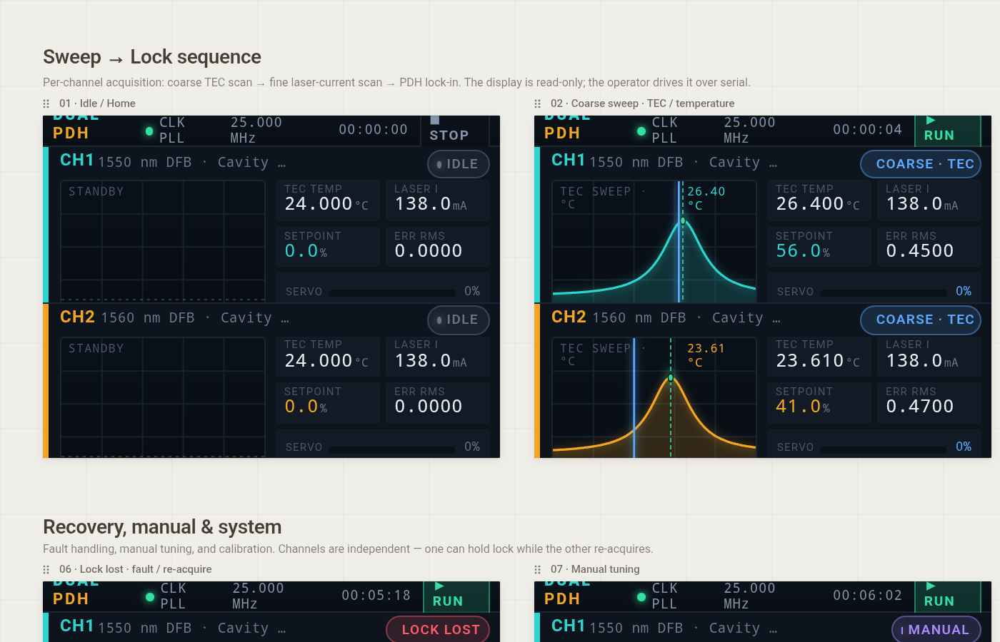
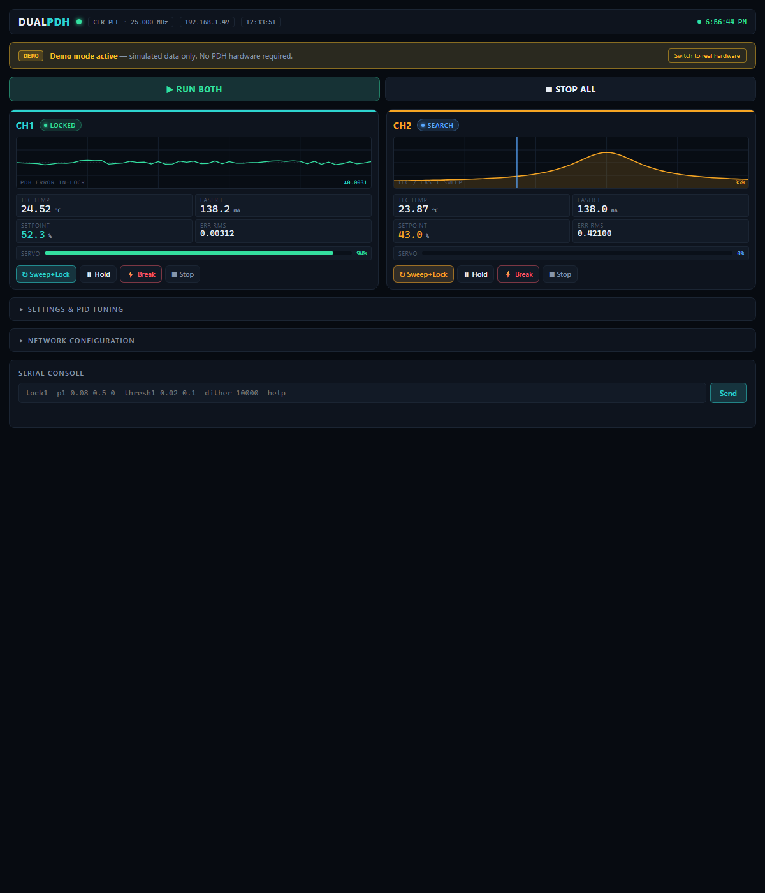
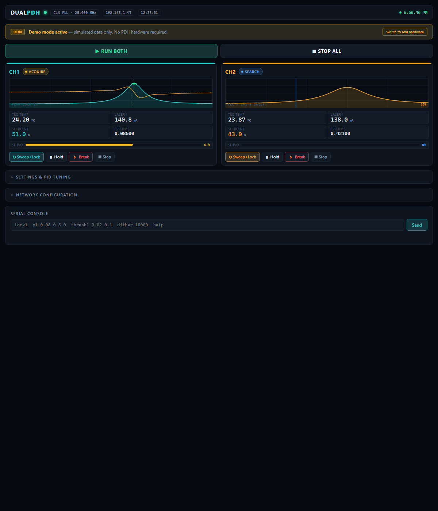
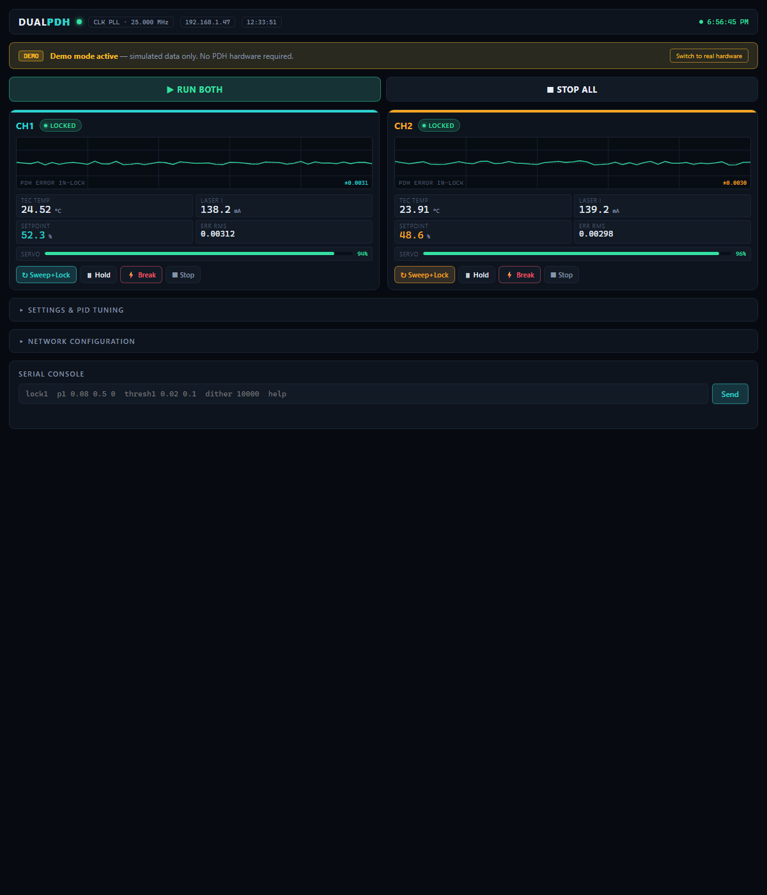
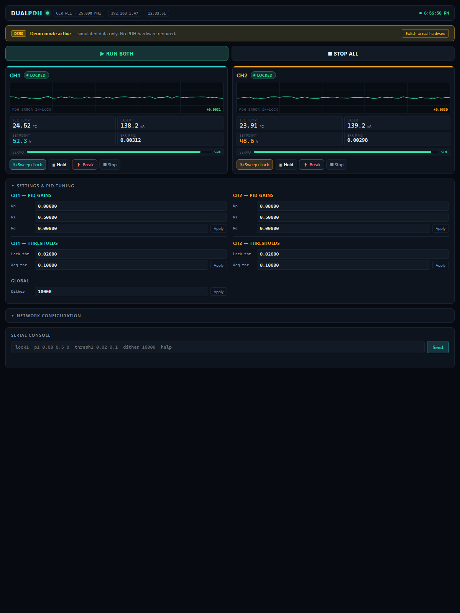
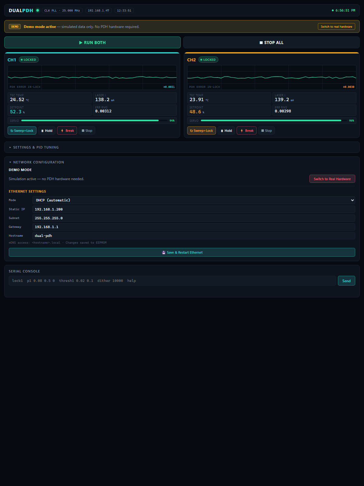
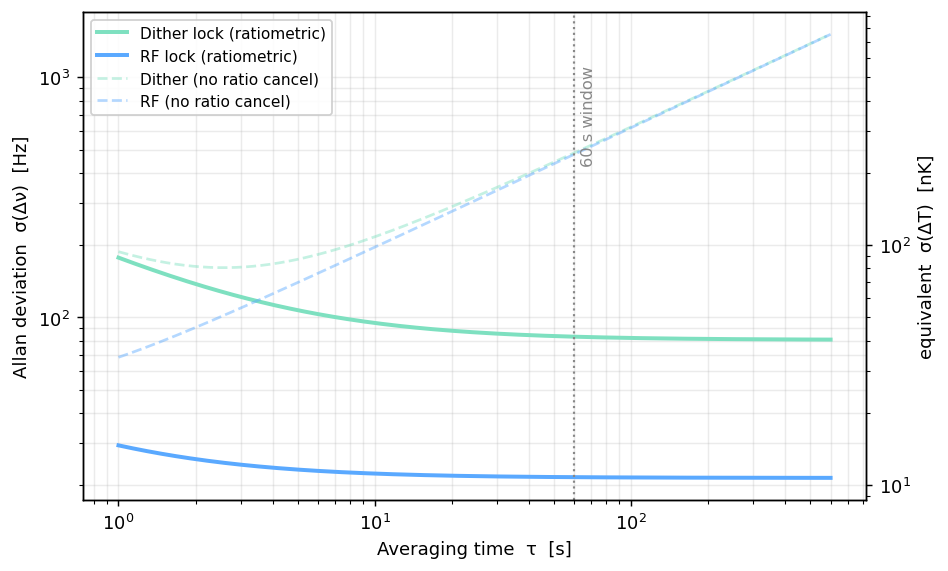

01 Introduction & intended use
The Dual-Laser PDH Driver is a precision, two-channel controller for a pair of 1550 nm distributed-feedback (DFB) butterfly laser modules. Each channel provides a low-noise constant-current laser drive, a bipolar linear thermo-electric-cooler (TEC) temperature controller, RF frequency modulation, and a synchronous-demodulation lock loop that holds the laser onto the side of an optical resonance.
The instrument is used as a differential optical thermometer. Two independent lasers, A and B, are each locked to their own fringe of a shared reference ring/cavity. The quantity of interest is the beat frequency between the two lasers:
Because the measurement is ratiometric and material-defined, slow common-mode drift (of the cavity, the room, the electronics) cancels, and the figure of merit is the within-60 s Allan deviation expressed in equivalent kelvin. A kHz digital dither lock reaches ≈40 nK; the RF analog-derivative lock this hardware runs targets the ≈4–11 nK regime, limited primarily by the laser's residual amplitude modulation (RAM), not by the electronics.
| Parameter | Value | Notes |
|---|---|---|
| Laser module | 1550 nm DFB butterfly (DFB1550LP / ML20550KK14Z600L class) | 14-pin package, ~70 mW |
| Laser operating current | 60 mA typ / 100 mA max | Vf ≈ 2 V |
| TEC current | +2.5 A cool / −1.5 A heat | Vmax 3.8 V cool / 2.5 V heat |
| Thermistor | 10 kΩ NTC, β = 3950 K | in butterfly package |
| Controller | Teensy 4.1 (600 MHz ARM Cortex-M7) | on DIG card |
| Set-point resolution (laser) | ≈ 1.4 µA/LSB | 16-bit DAC ÷221 into 0.25 Ω sense |
02 Safety
03 Theory of operation
This section walks the complete signal path — from set-point to locked laser — and derives the governing numbers for each stage, explaining why each block is built the way it is.
3.1 Why a differential lock at all
The physical measurand is a tiny temperature difference between two samples read out
through the optical frequency of light. A single laser locked to a cavity inherits every drift of
that cavity. Running two lasers through the same resonator and taking their beat note
makes the result depend only on the differential path: cavity length drift, common thermal
expansion, and shared electronic offsets appear identically on both arms and subtract out. What
survives is S·(TB−TA) with S ≈ 2 GHz/K, so a 1 nK
temperature difference is a ~2 Hz beat shift — comfortably countable against a 10 MHz reference
over the 60 s window.
3.2 Laser channel — the constant-current (ACC) core
Each laser is driven by a low-side N-channel MOSFET current sink closed around a precision op-amp (OPA192). The DAC set-point enters the non-inverting input through a resistive scaler; the voltage across a 4-terminal Kelvin sense resistor feeds back to the inverting input. The loop forces the sense voltage to equal the scaled set-point regardless of the laser's forward voltage:
Vset = VDAC · Rb/(Ra+Rb) = VDAC · 909R/200.9k ≈ VDAC/221
Loop ⇒ Ilaser · 0.25 Ω = VDAC/221
At full scale the 5.000 V reference gives Vset = 5.0/221 = 22.6 mV,
i.e. Ilaser = 22.6 mV / 0.25 Ω ≈ 90.5 mA. The set-point resolution follows
directly from the 16-bit DAC:
Why this topology. The ÷221 scaler deliberately compresses the full 5 V DAC span into a
22.6 mV control window so that the DAC's own noise and the op-amp offset are divided down by 201
before they become current noise. A Kelvin (4-terminal) sense resistor keeps the milliohms of
trace and solder out of the 0.25 Ω, and the BAT46W clamp protects the ≤2 V reverse-rated die. The PDH correction is summed into that same node through R96 7.5 MΩ,
giving 0.483 mA/V of servo authority: an OPA192 railed to +14.8 V adds only
+5.9 mA, so DAC full scale plus a railed integrator comes to 96.4 mA —
inside the DFB1550LP absolute maximum of 100 mA. Because U24 sits at VREF_MID
= 2.500 V when the error is zero, R134 15 MΩ to −5 V cancels
that pedestal (an exact 2:1 with R96, so even R134's 5 % tolerance costs only ~63 nA).
Rev D — this is the fix, not the original
circuit. Before rev D the bottom of the scaler went to the servo node instead of ground, so
the DAC and the servo formed a plain two-resistor divider whose weights were forced to sum to 1
(DAC 0.052, servo 0.948). Combined with VREF_MID being redefined from v3's 0 V
to 2.500 V, U24 idled at 2.500 V and commanded roughly 770 mA into a
100 mA laser the moment power was applied, limited only by R86. R67 is now a real scaler
bottom to ground, and R96/R134 inject the correction separately.
3.3 TEC channel — bipolar linear H-bridge
Laser frequency is set by die temperature, so the TEC loop is what the lock ultimately steers on long time scales. It is a four-quadrant linear bridge: two conducting FETs pass current through the Peltier element in either direction, delivering +2.5 A of cooling to −1.5 A of heating. The two half-bridges are driven in antiphase: U21 buffers the error amplifier straight onto leg 2 (Q17/Q18), while U106 inverts it about ground and U107 buffers that onto leg 1 (Q13/Q14). Each leg is a complementary source follower — IRLB8721 N-channel on top, IRF9540N P-channel below with its source on the bridge node — and the 15 V gate clamps to the ±6 V rails bound each leg to about ±4 V. The 470 Ω gate resistors hold a saturated buffer to 35 mA; at the original 47 Ω a saturated loop demanded 353 mA from a 200 mA OPA551 and drove it into thermal shutdown. A switching (PWM) bridge was rejected because its ripple would couple into the shared package thermal mass and modulate the very temperature being controlled.
The unipolar 0–5 V DAC is referenced to a virtual ground so that a mid-scale code is not
zero current — a buffered reference (TEC_VZERO, OPA192 U17) sets the zero point.
TEC_VZERO is ≈1.20 V, from R41 3.16 kΩ / R42 1 kΩ off 5Vref
(5.000 × 1/4.16 = 1.2019 V), trimmed by the setpoint DAC through R117/R43. It is not
VREF_MID and not the centre of the span: zero current sits at 24% of the 0–5 V
range, which is where the asymmetric +2.5 A cool / −1.5 A heat envelope comes from. Codes below it
heat; codes above it cool. Firmware uses TEC_DAC_ZERO_CODE = 15728 (1.20/5.00 ×
65535) and TEC_IMON_OFFSET_V = 1.20. The current transfer is set by the
scaler around that zero and the 0.1 Ω Kelvin sense:
Rsense = 0.1 Ω, scaler ≈ 20 kΩ / 4.99 kΩ ⇒ 250 mV at sense = 2.5 A full-scale cool
How the loop closes. U32 (INA828, G = 1 + 50k/8.06k = 7.20, REF on
TEC_VZERO) measures the 0.1 Ω shunt, and its output
TEC_IMON = 1.202 + 0.72·I is the feedback — so this is a true
current loop. R133 10 kΩ with C171 100 nF around U19 makes it a
dominant-pole integrator at 159 Hz (loop crossover ~115 Hz), far below the gate
pole and the INA828 bandwidth. Cooling current reads above 1.20 V, matching
TEC_IMON_OFFSET_V in firmware; at zero current U19's output sits at 0 V, where
both legs are equal.
Rev D — three defects fixed here. All four gate
resistors previously landed on one buffer output, so both legs moved together and the TEC saw
~0 V. Q14/Q18 had drain and source swapped, which forward-biased their body diodes and
stopped the P-channels ever enhancing. And U19's feedback came from the bridge terminal
TEC_BTF_N rather than the current sense, making it a voltage loop while every scaler
value, the 1.202 V zero and the firmware calibration all assumed current. All three are
inherited from v3, so the fabbed v5 CH cards have them too.
VZERO trim range — R117 is 2.00 kΩ on v6, 4.99 kΩ on
v5. The setpoint DAC trims TEC_VZERO into the VZERO_SET node through
R117 in series with R43 20 kΩ. DAC_VZERO_TRIM carries no shunt capacitor, so
R117 performs no filtering — it only adds to the injection resistance and shrinks the trim span:
| R117 | Injection | VZERO range | Span | Of full |
|---|---|---|---|---|
| 4.99 kΩ (v5, as fabbed) | 24.99 kΩ | 1.1665 – 1.3140 V | 147.5 mV | 81% |
| 2.00 kΩ (v6) | 22.00 kΩ | 1.1618 – 1.3287 V | 166.9 mV | 91% |
| 0 Ω (theoretical max) | 20.00 kΩ | 1.1579 – 1.3409 V | 183.0 mV | 100% |
Both values straddle the 1.2019 V target with margin, so this is a
headroom improvement rather than a defect — v5 cards need no rework for this particular item (they need a great deal for others — see the rev D boxes above). 2.00 kΩ was chosen over
a nominal 2.5 kΩ because it is an existing BOM line (R77, same 0805 footprint) and yields slightly
more span. R117 is a v3 carry-over (annotated “v3 R40”), which is also why R43 still carries the
stale TEC_scaler_bot label while in fact feeding a summing node.
(Vrail − VTEC)·I. Worst case is a few watts per channel, which is
why the dedicated ±6 V TEC supply is a heavy multi-amp linear rail and the FETs
need ≤10 °C/W to chassis. The endpoint calibration (code→current) is finished in firmware against
the measured IMON.Power-up safe state (rev D). A unipolar DAC needs a
non-zero code for zero current, so no reset state of U101 can mean “TEC off”
— RSTSEL only picks which wrong state you boot into. RSTSEL is tied to GND, which parks the
laser DAC safely at 0 mA but would otherwise leave the TEC commanding −1.34 A of
heating; tying it to VLOGIC instead would fix the TEC only by putting 45 mA of uncommanded
current through the laser. Instead U108 (ADG419) forces the setpoint node to
TEC_VZERO — exactly 0 A — whenever TEC_EN is low.
TEC_EN is PCA9538 IO3 with a 10 kΩ pulldown, and the expander powers up
with its IOs as high-Z inputs, so the bridge is off from the instant power is applied and stays
off if the Teensy never boots. Firmware raises it only after parking the DAC at the zero-current
code; tec1/tec2 off puts it back.
3.4 RF modulation & the derivative lock
The lock loop, per channel, is: modulate the laser current at Ω → the ring converts that FM into AM on the transmitted light → a wideband photodiode + TIA recovers it → an analog multiplier synchronously demodulates it against a phase-set reference at Ω → a low-pass leaves the DC error → an analog PI servo corrects the laser set-point. The Teensy supervises but no longer closes the fast loop.
RF injection — bias-tee, not gate coupling
The modulation is injected onto the laser line through a DC-block capacitor with a series choke isolating the DC loop, not onto the MOSFET gate. Gate injection would push the tone through the FET's nonlinear transconductance and stamp that nonlinearity onto the optical amplitude — manufacturing RAM, the one error the whole design is biased to minimize. The bias-tee keeps both the op-amp loop and the FET out of the RF amplitude path.
XC(Ω) = 1/(2π·Ω·Cbt) = 1/(2π·2 MHz·10 nF) ≈ 8 Ω ≪ Rinj ✓ (source couples in)
Ipk ≈ Vsrc,pk/Rinj = 0.6 V / 2 kΩ ≈ 0.30 mA pk
The 0.30 mA depth is chosen to give ≈0.1–0.3× the fringe half-width — enough discriminator slope, little enough RAM. Rinj is a trim so depth can be optimized once the laser's FM response is measured.
Wideband TIA
The transmission photocurrent is recovered by a wideband transimpedance amplifier (OPA814, running on ±5 V with its non-inverting input on ground) with bandwidth ≥ 5–10× Ω so the demodulated slope isn't rolled off. The feedback pair trades transimpedance against stability:
As built (AFE card): Rf = 8.06 kΩ, Cf = 1 pF, referenced to GND — output 0 V dark, −8.06 mV/µA
CTOT is the whole capacitance seen at the summing node, not just the diode. With the
FGA01FC capacitance now measured (Thorlabs product raw data,
SpecSheets/fga01_cap(Capacitance).csv) the budget is closed:
GBWP 250 MHz ⇒ Cf(flat) = 0.66 pF, Butterworth f−3dB = 30 MHz | as fitted Cf = 1 pF ⇒ f−3dB = 1/(2π·Rf·Cf) = 19.7 MHz
It also survives the part tolerance, which is what settles the question. C78/C79 are
GRM1555C1H1R0CA01D — the 1R0C suffix is ±0.25 pF, i.e. 25 %:
| actual Cf | vs Cf(flat) 0.66 pF | f−3dB | en·noise-gain peak |
|---|---|---|---|
| 0.75 pF | 1.14× — over-damped | 26.3 MHz | 44 nV/√Hz |
| 1.00 pF (nominal) | 1.52× — over-damped | 19.7 MHz | 34 nV/√Hz |
| 1.25 pF | 1.90× — over-damped | 15.8 MHz | 29 nV/√Hz |
The one term that is under layout control is Cpcb, and on a 2-layer board it is larger than intuition suggests — see the copper-keepout requirement below.
There is Rf headroom in reserve if the ring transmission turns out weak: holding the present 19.7 MHz, CTOT = 5.50 pF would support Rf ≈ 19 kΩ (Cf 0.43 pF) — 2.4× the transimpedance. The cost is dynamic range: photocurrent at the −5 V clip falls from ≈ 500 µA to ≈ 215 µA. Leave Rf at 8.06 kΩ until the optical power is measured.
| PDn_IN copper | no keepout | with keepout |
|---|---|---|
| pad (3.5 × 1.2 mm) | 0.74 pF | 0.23 pF |
| trace (≈ 10 mm × 0.25 mm) | 1.28 pF | 0.44 pF |
| Cpcb | 2.02 pF | 0.67 pF |
| CTOT | 6.85 pF | 5.50 pF |
GRM1555C1H1R0CA01D is 0.75 pF. A board without the keepout therefore sits at
1.02× flat — 2 % of margin: a part on the low side of its ±0.25 pF band, plus any stray not in
this model, tips that channel under-damped and rings near 30 MHz into the AD835.
With the keepout the same corner is 1.14× and stays over-damped. The tolerance table above only
holds because the keepout is there.
As implemented (both channels,
copperpour not_allowed on both F.Cu and B.Cu):
a band ≈ 14.8 × 5.2 mm following the pad and its trace, ≈ 0.9 mm clear below the pad and ≈ 1.1 mm
above, running out to the board edge. 100 % of both PDn_IN traces lie inside it, and the
two channels match to 0.003 pF — worth having, because a CTOT mismatch between
channels is a differential error in a differential instrument.
Cpcb figures are 2-D closed-form estimates (conductor-backed CPW before, CPW after, εr 4.5) integrated along the actual routing — good to roughly ±25 % in absolute terms; the before/after ratio is the trustworthy part.
Do not extend the keepout over PDn_BIAS_K. The cathode is an AC ground by construction (C_K 100 nF = 0.64 Ω at 2.5 MHz), so capacitance from it to the plane is ground-to-ground and does nothing — while the plane under it is the photocurrent return path through C_K. Removing it buys zero and lengthens that loop. The keepout stops ≈ 0.13 mm short of the BIAS_K pad by design.
Dark current — measured, and negligible in all three places it could matter
FGA01FC dark current is likewise measured (Thorlabs product raw data,
SpecSheets/fga01fc_dc.xlsx). It rises smoothly with reverse bias, so the +12 V rail
costs dark current relative to a lower bias — but the numbers are so small that the trade
never becomes a design constraint:
| reverse bias | Id | dark offset at TIA out Id·Rf | dark shot noise √(2qId) |
|---|---|---|---|
| 5 V | 0.088 nA | 0.71 µV | 0.0053 pA/√Hz |
| 12 V (as built) | 0.235 nA | 1.9 µV | 0.0087 pA/√Hz |
| 20 V (abs max) | 0.532 nA | 4.3 µV | 0.0131 pA/√Hz |
- Dark offset. 0.235 nA through Rf is 1.9 µV — two orders below the OPA814's own VOS (250 µV max). The "TP401/TP402 read 0 V dark, within a few millivolts" check in §16.2 is testing amplifier offset, not the detector. A dark reading of millivolts means an offset or a light leak, never dark current.
- Noise. Dark shot noise is 0.0087 pA/√Hz against 1.43 pA/√Hz of Rf Johnson noise — 165× below the floor, contributing 0.002 % in quadrature. Total input-referred current noise at the 2–2.5 MHz demodulation frequency is 1.6 pA/√Hz (Rf Johnson 1.43, en×noise-gain 0.80, dark shot 0.009), i.e. NEP ≈ 1.7 pW/√Hz at 0.95 A/W. In operation the front end is signal shot-noise limited — 100 µA of photocurrent alone gives 5.7 pA/√Hz, which is the regime you want.
- Temperature. InGaAs dark current roughly doubles per 10 °C. Even at 85 °C the ×64 rise gives 15 nA → 121 µV of offset and 0.069 pA/√Hz of shot noise, still 20× below Rf Johnson. There is no dark-current drift term worth budgeting, and no case for cooling the detector or trimming a dark pedestal.
Synchronous demodulation
An AD835 four-quadrant analog multiplier (U45/U46) forms the phase detector, multiplying the TIA output by a phase-set reference. At the modest 2–2.5 MHz demodulation frequency a true linear multiplier is the low-noise choice: unlike a switching mixer it injects no synchronous charge-injection offset, and because it is driven by a clean sine — not a hard-switched square — it folds no odd-harmonic noise onto the baseband error. (This replaces the earlier AD831 RF mixer, whose 500 MHz bandwidth was 200× more than a 2 MHz demodulator needs and which, like any hard-switched mixer, would have folded harmonics.) That reference is a dedicated per-channel AD9833 — four DDS total (two drive, two reference) all sharing one 25 MHz clock so every tone is phase-coherent, and the two channels stay independent (ΩA ≠ ΩB). Because the DDS sine is only ~0.6 Vpp and the multiplier's discriminator slope scales with LO amplitude, each reference is first boosted by an OPA820 ×3 buffer to nearly fill the AD835's ±1 V input range. The multiplier output contains a DC term proportional to the fringe slope error plus a 2Ω product; the 2-pole low-pass (fc ~50 kHz) keeps the error and rejects the 2Ω term. That baseband error then drives the analog PI loop filter below, whose output sums into the laser set-point to close the lock.

LOCKn_EN): held open during sweep/acquire, closed to run the loop
once resonance is captured. The output sums into the laser current set-point node (N_U22_INP) through R96 7.5 MΩ, with R134 15 MΩ to −5 V cancelling the 2.500 V VREF_MID pedestal.3.5 Reference & digitization chain
Every set-point traces back to one buried-Zener reference, an LTC6655-5 (5.000 V,
0.25 ppm), RC-filtered to ~16 Hz before it reaches the DACs, so reference noise is ≈1.6 µV p-p.
Each signal card digitizes locally over I²C — a 16-bit DAC (AD5696R/MCP4728 class) makes the
set-points and an ADS1115 reads the monitors — rather than busing dozens of raw analog lines across
the backplane. The AFE carries a DAC of its own for the same reason: rather than a trimpot an
operator has to revisit, its ERR offset is nulled by firmware and stored (§14.8). Only two analog signals per channel are bused: the demodulated error
(ERRn, driven by the AFE) and the modulation drive (MODn, driven by the
DIG DDS).
3.6 Power architecture — and why it is all linear
A frequency-stabilized laser is exquisitely sensitive to supply noise, so every rail is linear; there is not a single switching converter in the instrument. The chain is:
The two DC power cards use two different linear philosophies for good reason:
- pm22V is a capacitance multiplier, not a regulator. The downstream pm1p8V card re-regulates everything to precise rails, so pm22V only has to deliver a quiet, low-dropout ±18 V. A source-follower MOSFET whose gate is filtered by a slow RC passes the raw rail with its ripple stripped off — cheap, cool, and low-drop, exactly what a pre-regulator wants to be.
- pm6V is a true regulated supply, because the TEC load is high-current and its rail sets bridge dissipation directly. It is a discrete Vbe-tracking linear regulator with paralleled TO-264 Darlington pass transistors — regulation good enough to keep the TEC rails stable to tens of millivolts over temperature, current capacity (parallel devices + emitter ballasting) to source multiple amps continuously.
The ±15 V analog rails are made by a TPS7A39 dual tracking LDO, chosen because a single shared internal reference makes the + and − outputs track ratiometrically at every instant — a mathematical consequence of the topology, not a trimmed match:
Equal ramp at startup ⇒ rails always equal-and-opposite (no differential thermal transient into the DFB).
The individual rails and their derivations are detailed per-card in §09. The full rail-by-rail current budget lives in the companion power review document.
▲ top04 Optical measurement setup
This section describes what sits outside the crate. The instrument itself never sees the measurand: it holds two lasers on two resonances, and the quantity you actually record — the optical beat between them — is formed in fiber and counted by external equipment. Understanding where the boundary falls matters, because the terms that dominate the error budget in §17 live out here, in optics the instrument cannot correct for.
4.1 The optical chain end to end
The chain divides into three parts with quite different characters. The drive path (solid, outbound) is the instrument imposing a frequency on each laser. The feedback path (dashed) is what makes the lock possible — without the taps there is no error signal and the servo has nothing to act on. The readout path (below the mixer) is pure measurement: it is deliberately open-loop, and nothing on it feeds back into the crate.
4.2 Why the measurement is a beat and not two frequencies
Neither laser's absolute frequency is known to anything like the precision the result implies — a free-running DFB wanders by many megahertz, and the instrument contains no absolute frequency reference. What is precise is the difference. Both lasers are locked to rings on the same die, so any effect common to both — die temperature drifting as a whole, mount strain, ambient pressure — moves both resonances together and cancels in the subtraction:
Δν = νB − νA = S·(TB − TA), S = dν/dT ≈ 2 GHz/K
Two consequences follow, and they shape the whole design. First, absolute accuracy does not matter: the scale factor S is a property of the silicon, not of anything that needs calibrating, so the instrument never needs an absolute reference or a traceable frequency standard. Second, the figure of merit is within-window stability, not accuracy — how quietly the beat sits over a ~60 s window. That is why §17 is built around an Allan deviation at τ ≈ 60 s rather than a conventional accuracy budget, and why terms that drift slowly relative to that window are listed as cancelling.
Detecting the two lasers on one photodiode is what turns an optical-frequency difference into something countable. At 1550 nm each optical frequency is ≈193 THz — utterly uncountable — but their difference lands in the RF, where an ordinary counter works. With S ≈ 2 GHz/K, a 1 nK temperature difference is ≈2 Hz of beat, so nanokelvin resolution becomes a routine RF frequency measurement rather than an optical metrology problem.
4.3 Fiber connectors — APC on the laser side, PC at the detector
The connector types are not interchangeable, and the reason is worth stating plainly because mismatching them is an easy and expensive mistake.
- Laser outputs use FC/APC (angled physical contact, 8° polish). The angle sends any reflection at the fiber end face out into the cladding instead of straight back down the core. A DFB laser is acutely sensitive to back-reflection: light returning into the cavity competes with the intended lasing mode and produces mode hops, linewidth broadening, and excess intensity noise — all of which appear directly in the lock as error-signal noise or as a lost lock. APC is cheap insurance for the one interface where reflection actually hurts.
- The beat detector terminates in FC/PC (flat polish). There is no laser cavity downstream to protect — a photodiode does not care about reflections — so the simpler, lower-loss, more common connector is the right choice.
4.4 Optical power budget
The photodetector converts optical power to current linearly:
Ipd = ℛ · Popt, ℛ ≈ 1 A/W
The binding constraint is not sensitivity but survival. The beat detector has a damage threshold of Pmax ≈ 18 mW, and because the mixer combines both through arms onto that single detector, it sees the sum of what the two rings deliver. That ceiling propagates backwards through the whole optical layout: it caps the usable power out of the microrings, which together with the splitter ratio caps how hard the lasers may be driven.
The split ratio is therefore a genuine design trade rather than a detail. Sending more light to the taps gives the AFE transimpedance amplifiers a larger photocurrent and a better signal-to-noise ratio on the error signal — but leaves less for the beat. Sending more to the through arms improves beat contrast but starves the lock. Set the ratio so the lock has comfortable margin first: a noisy beat on a solid lock is still a measurement, whereas a lock that drops out produces nothing at all.
4.5 Keeping the two channels from talking to each other
Both lasers are amplitude-modulated for their derivative locks (§3.4), and both end up on the same photodiode. If the two channels used the same modulation frequency, their modulation sidebands would beat against each other and land as a spurious tone right in the band where the real measurement lives — a systematic error that would look like a temperature difference.
The fix is to run the two channels at deliberately different modulation frequencies, set
per channel with omega1 / omega2. Each AFE demodulator is then sensitive
only to its own channel's tone, and the crosstalk product falls outside the differential beat's
band of interest. Choose the two frequencies so that neither their difference nor low-order
harmonics land near the beat frequency you expect to measure.
4.6 What good looks like
With the optics assembled and both channels locked, expect the following. Both channels report
LOCKED with a small, stationary error signal (§14). The beat on
the counter is a single clean tone, not a wandering or multi-valued reading — a jumpy count usually
means one laser is mode-hopping rather than that the temperature is moving. Breathing on the die
should move the beat by megahertz and it should settle back, which confirms end-to-end sensitivity
and correct sign. Blocking one tap should drop that channel out of lock while the other holds,
confirming the two feedback paths are independent and not swapped.
c20
(§11). A shared reference removes the counter's own drift from the measurement;
with a common timebase the contribution is negligible, which is why
§17 lists it near zero.05 System architecture
The instrument is a 3U card cage: a passive 8-slot backplane in a Wakefield SUBRACK EASY 3U / 84HP frame, with each function on its own removable Eurocard. Every slot presents an identical DIN 41612 Type M 24+8 connector, so any card fits any slot — power cards use only the heavy blade pins, signal cards use the signal rows plus the blades.
| Card | Qty | Role |
|---|---|---|
| AC Board | 1 (chassis) | Mains inlet, fuse, inrush limiter; feeds the two toroidal transformers |
| pm22V | 1 | ±18 V bus (cap-multiplier) for all logic/analog rails |
| pm6V | 1 | ±6 V high-current linear supply for the TEC bridges |
| pm1p8V | 1 | Regulated ±15 V, ±5 V, 5 Vref, 3V3, 1V8, +5 V_LASER |
| DIG | 1 | Teensy 4.1 controller, 4× AD9833 DDS, clock, voltage monitor |
| CH | 2 | Per-channel laser driver + TEC bridge + readback + front-panel laser head |
| AFE | 1 | Photodiode bias, wideband TIAs, AD835 demodulators — the detection front end |
5.1 Universal slot pinout
All eight slots are wired identically. The 24 signal pins (rows a/b/c, positions 13–20) carry the rails, I²C, and the two bused analog signals; the 8 blades (P1–P8) carry the high-current TEC and ±18 V rails.
| Row a | Row b | Row c |
|---|---|---|
| a13 +15V | b13 +5V_LASER | c13 ERR1 |
| a14 −15V | b14 GND | c14 ERR2 |
| a15 GND | b15 5Vref | c15 GND (guard) |
| a16 +5V | b16 VREF_MID | c16 MOD1_DRV |
| a17 −5V | b17 GND | c17 MOD2_DRV |
| a18 3V3 | b18 SDA | c18 GA0 |
| a19 1V8 | b19 SCL | c19 GA1 |
| a20 GA2 | b20 FAULT_n (wired-OR) | c20 SPARE_CLK10M (buffered 10 MHz) |
Blades: P1 +6V_TEC · P2 PGND_TEC · P3 −6V_TEC · P4 PGND_TEC · P5 +18V · P6 GND · P7 −18V · P8 GND.
5.2 Card addressing — on-card jumpers
Every card sets its own identity with on-card jumpers; the backplane GA pins
(a20/c18/c19) are unused and may be left unrouted. Each address line GA0..GA2 has a
10 kΩ pull-up to 3V3 and a two-pin jumper to ground: jumper fitted = 0, jumper open = 1.
The GA code sets the card's I²C addresses, and on the CH cards GA0 additionally
steers the on-card ADG419 muxes that select which bused analog pair
(ERR1/MOD1 vs ERR2/MOD2) the card uses. A card can therefore sit in
any slot — identity travels with the card, not the slot.
Setting the address on a CH (laser channel) card
The two CH cards are physically identical; the jumpers are the only thing that makes one card "laser 1" and the other "laser 2". Set them before installing the card:
| Jumper | Bit | Channel 1 card | Channel 2 card |
|---|---|---|---|
| JP101 | GA0 | Fitted (GA0 = 0) | Open (GA0 = 1) |
| JP102 | GA1 | Fitted (GA1 = 0) | Fitted (GA1 = 0) |
| JP103 | GA2 | Fitted (GA2 = 0) | Fitted (GA2 = 0) |
What each setting produces:
| Channel 1 (GA0 = 0) | Channel 2 (GA0 = 1) | |
|---|---|---|
| Analog buses (ADG419, IN = 0 → S1) | ERR1 / MOD1 | ERR2 / MOD2 |
| ADS1115 monitor ADC | 0x48 | 0x49 |
| AD5696R set-point DAC (base 00011 A1 A0) | 0x0C | 0x0D |
| PCA9538 GPIO expander (base 1110 0 A1 A0) | 0x70 | 0x71 |
Other cards. The DIG card is the bus master and needs no address. The AFE card carries two devices, both hard-strapped on-card with no jumper to mis-set: its ADS1115 monitor ADC ties ADDR→SDA for 0x4A, and its AD5696R offset-null DAC ties A1→VLOGIC and A0→GND for 0x0E — the next code after the two CH-card DACs. Both sit deliberately outside the CH cards' ranges. Where AFE/DIG carry GA jumpers they follow the same fitted-=-0 convention.
GAIN pin to VLOGIC (gain 2, 0–5 V span) while the
AFE ties it to GND (gain 1, 0–2.5 V span). The same code word therefore means a different
output voltage on the two cards.5.3 Fault handling
FAULT_n (b20) is an open-drain wired-OR line any card can pull low. On assertion the
Teensy edge-detects it, then polls each card over I²C to find the source, and parks lasers and TECs
safe. Sources include the CH-card H-bridge Flag pins and the DIG-card voltage monitor
(any rail out of its window pulls the line via the D303–D311 diode-OR). LOCK_EN and
per-card status live in I²C registers (PCA9538 GPIO expanders) rather than dedicated bus wires.
06 AC Board — mains entry
Lasser_Driver_v5/AC_Board. The mains-entry and distribution board. It is
mains-only: 120 VAC line and neutral are distributed here, and the transformer secondaries
deliberately never touch this copper.
Function
- PEM01 IEC inlet (TE 7-6609940-4) with an integral 2 A slow-blow fuse — the sole primary over-current protection.
- TH1 inrush limiter (Ametherm SL22 10005) in the line, taming the cold-start surge into the transformer primaries and bulk capacitors.
- R1 bleeder and three Phoenix 5.08 mm screw terminals (J1–J3) that distribute switched/fused line and neutral to the chassis-mounted transformers.
Interaction with the rest of the instrument
Two toroidal transformers are chassis-mounted (off-board) and wire back to the screw terminals:
- T1 — Triad VPT36-1390 (2×18 V, 50 VA) → the
±18Vacsecondary feeding pm22V. (Triad "VPT36" = 36 V total CT secondary; "-1390" ⇒ ~1.39 A.) - T2 — Triad VPT18-8800 (2×9 V) → the
±9Vacsecondary feeding pm6V.
Neutral node is mains neutral and is
a different, isolated node from any secondary center-tap on the DC cards — they must never
be bonded. Custom design rules on this board enforce a 6 mm primary↔secondary creepage and a
2 mm mains-to-edge keepout. The two transformers' secondaries run straight to the DC cards' input
terminals, keeping SELV wiring off this board entirely.07 pm22V — ±18 V supply
Lasser_Driver_v5/pm22V. A 160×100 mm 3U Eurocard dual-rail supply. Despite the folder
name it is targeted at ±18–20 V; it is a capacitance multiplier / low-dropout filter,
not a regulator. Its job is to hand the pm1p8V card a quiet ±18 V from which precise rails are made.
Topology (per rail)
+rail FET = Q1 IRF540N (NMOS), −rail FET = Q2 IRF9540N (PMOS)
Each pass FET is wired as a source follower whose gate is held at the raw rail through a 100 kΩ resistor and bled to the source through 1 MΩ, with a 470 nF gate capacitor. That RC gives a ~47 ms soft-start and, in steady state, presents the FET gate with a heavily filtered version of the raw rail; the source (output) then follows that clean gate voltage, multiplying the effective reservoir capacitance by the FET's gain. A 12 V Zener clamps VGS.
Reservoir placement (design note)
The bulk reservoir belongs on the rectifier/drain side (C9/C10 across each raw rail to ground), not only on the FET output: with a smoothed drain the gate RC filters it and the FET follows clean. Without a drain-side reservoir the bridge feeds an unsmoothed full-wave waveform into the drain and the cap-multiplier degenerates into an ordinary lossy reservoir supply — still DC, but noisier and with high FET peak currents.
Thermal & connectors
- Heatsinks: Q1/Q2 on Boyd 531102B02500G (TO-220); bridge D1 on a Boyd 6223BG bolt-on sink.
- Input: 3-position Phoenix screw terminal (
±18Vac+ CT). Output: DIN 41612 Type M (J6) — the ±18 V blades to the backplane.
08 pm6V — ±6 V TEC supply
Lasser_Driver_v5/pm6V. A 160×100 mm Eurocard delivering the high-current ±6 V
rails that power the TEC H-bridges on the CH cards (up to +2.5 A / −1.5 A per channel). Unlike
pm22V this is a proper regulated linear supply, because the TEC rail voltage directly sets
bridge dissipation and must stay stiff under multi-amp load.
Topology (per rail)
+rail pass: Q9/Q10 MJL21194 (NPN, TO-264) · −rail pass: Q7/Q8 MJL21193 (PNP, TO-264) · 0.1Ω emitter ballast each
The regulation is a classic discrete Vbe-tracking loop. A precision adjustable shunt reference (LM4051, U11/U12) sets a divided reference; 1N4148 diode chains provide thermally-compensated Vbe level-shift into small-signal drivers (Q6 MMBT2222 / Q5 MMBT2907), which in turn drive the paralleled power Darlingtons through 10 Ω base-stoppers. The reference divider sets the rail:
Rail output = base ∓ 2·Vbe ≈ ±6.0 V
Why two pass devices per rail. A single transistor can't carry multiple amps continuously within a Eurocard's thermal envelope, so each rail parallels two TO-264 devices, each with a 0.1 Ω emitter-ballast resistor to force current sharing. A soft-start MOSFET pre-regulator (Q3 IRF540Z / Q4 IRF9540, gate-clamped source followers like pm22V's) sits ahead of the Darlingtons on the raw rail.
Thermal, grounding & connectors
- Pass Darlingtons Q7–Q10 on Wakefield 657-10ABPE TO-264 sinks (low-profile, chosen to fit the 160 mm card); soft-start FETs Q3/Q4 on Boyd 531102B02500G; bridge on Boyd 6223BG.
- The board routes the TEC ground as
PGND_TEC, kept isolated from logicGNDand tied to system ground only at the backplane star point — so multi-amp TEC return current never shares copper with the analog reference return. - Power nets routed on wide (3 mm) copper pours, both layers, recommended at 2 oz for peak
margin. Input: Phoenix screw terminal (
±9Vac). Output: DIN 41612 Type M (J6) blades.
09 pm1p8V — low-voltage rail card
Lasser_Driver_v5/pm1p8V_pm5V_5Vref_5Vlaser. This card turns the raw ±18 V bus into
every precise low-voltage rail the analog and digital sections need — roughly 9 W total, with
clip heatsinks on the hot TO-220 pre-regulators. All rails are two- or three-stage linear
cascades: a rugged first regulator drops the bulk voltage, then an ultra-low-noise LDO polishes it.
| Rail | Cascade | Load (typ) |
|---|---|---|
| ±15 V analog | ±18 V → TPS7A39 (±16.3 V tracked) → LT3042 (+15) / LT3094 (−15) | ~30 / 23 mA |
| 5 Vref | +18 V → 7808 → LT3042 (5.5 V) → LTC6655-5 (5.000 V) | ~6 mA |
| ±5 V | 7808 → LT3045 (+5) / 7905 → LT3094 (−5) | ~150 / 100 mA |
| 3V3 + 1V8 | 7812 → 7805 → LT3045 (3V3) → LP5907 (1V8) | ~168 mA (chain) |
| +5V_LASER | 7812 → 7808 → 2× LT3045 paralleled | 205 mA |
Why the cascades look the way they do
- ±15 V uses the TPS7A39 dual tracking LDO so the two rails ramp and drift together (see §3.6); its feedback divider is set for +16.3/−16.3 V, giving the final LT3042/LT3094 stages ~1.3 V of clean headroom above ±15 V.
- 5 Vref is the metrology heart: a cheap 7808 knocks ±18 V down, an LT3042 gives the LTC6655 a quiet 5.5 V input, and the LTC6655-5 produces the 0.25 ppm 5.000 V that every DAC set-point is ratioed against.
- +5V_LASER parallels two LT3045s (share-set for ~248 mA) because the two laser current sinks together draw more than one LDO's low-noise sweet spot allows.
- VREF_MID (2.500 V, from a 0.1% ratiometric divider off 5Vref buffered by an OPA192) is the analog mid-supply the TIAs and TEC virtual-grounds reference.
LT1028_2 symbol embedded in the v5
schematic numbers the OPA192 SOT-23-5 as 1=OUT, 2=IN−, 3=IN+, 4=V−, 5=V+, but the real
part is 1=OUT, 2=V−, 3=IN+, 4=IN−, 5=V+. The drawing is logically a correct unity-gain
buffer, but as fabbed the feedback from pin 1 lands on the V− pin and −15 V lands on the
IN− pin — U21 has no negative supply and its inverting input is clamped at −15 V, so its
output slams to the positive rail. VREF_MID is generated only here and bused to
every slot on b16, so every VREF_MID-referenced stage in the crate — both TEC virtual grounds, the
AFE error-stage level shift and its ADC datum, the CH-card integrator datum — rests on it. Rework: lift U21 pins 2
and 4 clear of their lands and cross them with two short wires — pin 2 to the pad-4 land (−15 V),
pin 4 to the pad-2 land (the R50 feedback node). Verify after rework: TP411 /
backplane b16 must read 2.500 V ±3 mV (§16) with the card loaded; check
this before commissioning anything downstream. Corrected in
Lasser_Driver_v6/pm1p8V_pm5V_5Vref_5Vlaser (schematic; the two U21 traces still need
re-routing in that layout).DGND (the ±9 Vac-CT, TEC-only return) is
deliberately kept off this card; GND is the single logic+analog ground here.
The single-point DGND↔GND tie is made at the backplane star, at power entry, so the
quiet analog ground never carries TEC return current.10 Backplane
Lasser_Driver_v5/Backplane. A passive 2-layer 8-slot backplane carrying 8× DIN 41612
Type M 24+8 female connectors (J1–J8) on an exact 50.8 mm (10 HP) pitch, sized to drop into the
84 HP subrack with 4 HP to spare.
Function & interaction
- Rail distribution. Every rail buses across all eight slots as one island; the heavy TEC and ±18 V rails are doubled onto both copper layers and heavily via-stitched (287 vias) to reach ~10 A ampacity and hold the loop drop under ~0.35 V at 6 A.
- Ground architecture — two grounds, one bond. The system runs two separate ground
nets:
GND(analog / signal / logic return, shared by every card and the ±18 V, ±5 V and logic rails) as one plane, andPGND_TEC(the ±6 V TEC-supply return) as a second, deliberately separate plane.PGND_TECis galvanically isolated at source because pm6V is transformer-fed from its own ±9 Vac secondary — it shares no rail with system ground. The two planes are joined at exactly one point, here on the backplane, next to the pm6V slot, by the single-point bond below. That tie is mandatory: without it the isolated TEC domain floats, and the ±15 V-referenced TEC current-sense (INA828) and H-bridge control op-amps on the CH card would see an undefined input common-mode and mis-read or clip. - Signals. I²C (SDA/SCL), the two bused analog pairs (ERR1/2, MOD1/2), VREF_MID, and
the wired-OR FAULT_n run to every slot. Geographic-address pins are not bused: each slot
hard-wires its own GA code to
3V3/GNDto give the card its identity — the two laser-card slots being the exception, where GA is left open for the CH card's on-card jumpers (see §5.2).
GND and
PGND_TEC are tied together by three parts in parallel, placed on the backplane next to
the pm6V slot: R1 — 0 Ω net-tie (the DC reference, the only strictly required part);
C1 — 100 nF (shunts HF common-mode across the bond); and D3 — SMAJ5.0CA (bidirectional
5 V TVS, clamps startup / fault transients between the domains). Populate this network at
exactly one location — a second GND↔PGND_TEC tie anywhere in the system forms a ground loop.
The bond carries only op-amp bias / leakage current: the TEC load current loops entirely within the
±6 V / PGND_TEC domain and never returns through it, which is why the reference is a
low-impedance link rather than a resistor.Mechanical
Frame: Wakefield 3634110 SUBRACK EASY 3U / 84HP (IEEE 1101.1). Board is 432 × 128.55 mm (3U, H8) with 16× M2.5 mounting holes on connector centerlines (122.5 mm row pitch, H6). Card guides: 16× C/A Design 160 mm PCB guides (two per slot). Nylon washers isolate the backplane ground from the chassis.
▲ top11 DIG card — controller
Lasser_Driver_v5/DIG_Card. The digital/supervisory card and the bus master.
Function
- Teensy 4.1 (600 MHz Cortex-M7) supervisor + front-panel TFT (CR2013-MI2120). It runs the state machine, telemetry, and fault handling; the fast lock loop is analog on the AFE/CH cards.
- 4× AD9833 DDS (25 MHz clock): U34/U39 generate the two modulation drives
(
MOD1/MOD2_DRV), U35/U38 the two phase-set demod references. The modulation drives are buffered by OPA192 unity-gain followers (U301/U302) and driven onto the bus through 47 Ω series (R306/R307); an RC reconstruction-filter footprint (R314/R315 + C310/C311) sits ahead of each buffer, fitted 0 Ω / DNP by default. - Clock generation — a 10 MHz reference feeds a CDCE913 PLL (U42). The reference is
selected by an SN74LVC1G3157 analog mux (U41) between the on-card oscillator Y1
(ASE-10.000MHZ-LC-T, input
B1) and the front-panelJ2SMA, which reaches inputB2AC-coupled through C89 and a 1 kΩ series (R107) behind a 50 Ω termination (R104). Selection is meant to be automatic: a second tap off J2 drives an envelope detector (C90 / R108 / D24 / C91 / R109) into an LMV7219 comparator (U40) against an 87 mV threshold (R105 1 M / R106 27 k, 2 MΩ hysteresis via R110), whose output drives the mux select pin. Connect a reference to J2 and the card switches to it; remove it and the card falls back to Y1. Nothing in firmware is involved — the changeover is pure hardware. - Clock distribution — the CDCE913 produces three outputs:
MCLK125 MHz to the channel-1 DDS pair (U34/U35),MCLK225 MHz through a 33 Ω source termination (R316) to the channel-2 pair (U38/U39), andMCLK3through R317 33 Ω to Teensy pin D9 as the FreqCount reference. The selected 10 MHz is separately buffered (U303, 74LVC1G125) and driven through a 33 Ω source termination (R311) onto backplane pinc20, so downstream cards can be made clock-coherent later. The clock section runs on its own filtered supplies,3V3_OSCand1V8_CLK, each behind a 600 Ω @100 MHz ferrite (FB301/FB302). The 2.2 kΩ pull-ups on this sheet (R112/R113) are the system's only I²C bus pull-ups. - Front-panel LO outputs — the two phase-set reference DDS channels leave the card on
their own SMAs: U35 → R312 49.9 Ω →
J302(LO1_OUT) and U38 → R313 49.9 Ω →J302B1(LO2_OUT). These jumper by coax on the front panel to the AFE card's LO inputs, which is how the demodulator reference crosses between cards — it is not carried on the backplane. - Voltage monitor block windowing the low-voltage rails and the ±6V_TEC blades
(present in every slot). Each comparator node is diode-OR'd (D303–D311, Schottky) onto the
shared
FAULT_nline, so a rail dropping out of window trips the supervisor rather than only lighting a local LED. The ±18 V blades (P5/P7) pass through this card unmonitored.
Interaction
The DIG card is the I²C master and DDS source. It drives MOD1/MOD2 onto the bus for
the CH channels, reads the demodulated ERR1/ERR2 into the Teensy ADC, owns the shared
FAULT_n line, and provides the geographic-address logic reference. Those error lines
arrive already amplified ×5.02 and level-shifted by the AFE card's inverting output stage onto a
positive zero-error datum (§13) — that shift is what makes a bipolar error
readable by this card's positive-only ADC, and it is why the DIG card needed no change after
fabrication. Each error input is then conditioned at the Teensy pin — a 3.3 kΩ series
+ 1 nF shunt RC with a BAT54S clamp to 3V3/GND (R303/R304, C303/C304, D301/D302) — since the
Teensy 4.1 ADC is neither 5 V- nor negative-tolerant. Freed monitor/enable pins from the old point-to-point design migrate to per-card
I²C GPIO.
Teensy/…/config.h and mirror the DIG card
net names (GA0/1/2 = D14/D15/D16, FAULT_n = D31, I²C on D18/D19). See §14.+5V at VIN (not the
3V3 rail). Cut the VUSB↔VIN pad on the underside of the Teensy before installing — otherwise
plugging in a USB cable for programming back-drives the crate-wide +5V rail.B1, latching the card to Y1 forever. The card still runs
correctly on its internal oscillator, so the only symptom is that J2 does nothing.
If an external reference has no effect, check D24 before suspecting the mux or the source
(§16.6 step 6).RF50 net class, which
also carries 0.5 mm clearance. Other classes: Power 0.5 mm, Clock 0.3 mm,
RF 0.3 mm, Default 0.25 mm.12 CH card ×2 — laser channel
Lasser_Driver_v6/CH_Card (v5 is the superseded, fabbed revision).
Rev D (2026-07-28) — what changed, and why v5 boards are not simply reworkable. A full review found five defects inherited from v3, all present on the fabbed v5 cards:
- All four H-bridge gate resistors fed from one buffer, so both legs moved together and the TEC saw ~0 V. Fixed by adding U106 (inverter) and U107 (second buffer).
- Q14/Q18 had drain and source swapped, forward-biasing their body diodes.
- U19's feedback came from the bridge terminal, not the current sense, making a voltage loop
out of what everything else assumed was a current loop. Now closed on
TEC_IMONwith an R133/C171 integrator. - The laser setpoint summing node had no ground leg, so the DAC and PDH servo weights were
forced to sum to 1; with
VREF_MIDnow 2.500 V this commanded ~770 mA into a 100 mA laser at power-up. R67 is now a real scaler bottom, with R96/R134 injecting the correction. - The OPA551
Flagis a current source, but was wired to a pull-up and so read HIGH in both states. Now R49 33 kΩ to ground plus the D23 clamp, active-HIGH.
Also added: U108 TEC power-up disable, 470 Ω gate
resistors, the ADS1115 ALERT tied into FAULT_n, and 30 test points.
Items 1 and 2 need parts and connections that do not exist on a v5 board, so plan on fabbing
v6 rather than reworking v5.
On-card blocks
- Laser ACC driver — OPA192 (SOT-23-5) driving a DMN3404L logic-level FET current sink into a 0.25 Ω Kelvin sense with a BAT46W reverse clamp (§3.2). RF modulation enters here via the bias-tee.
- TEC bipolar bridge — OPA192/OPA551 error+buffer driving a four-quadrant H-bridge of IRL540N (high-side N) and IRF9540N (low-side P) FETs into a 0.1 Ω Kelvin sense; virtual-ground referenced to VREF_MID (§3.3). All four bridge FETs carry heatsinks — see the note below.
- Readback — laser IMON and TEC IMON via INA828 instrumentation amps, the internal monitor-photodiode TIA (both a fault detector and an NTC-compensated optical-power reading, §14), and the 10 kΩ NTC, all digitized on-card by an ADS1115.
- Digitization & interface — J1 universal DIN, AD5696R DAC on +5 V with gain ×2 for a
0–5 V set-point span (matching the ÷201 laser and TEC scalers), ADS1115 (monitors), PCA9538 GPIO
(LOCK_EN / HB fault), and ADG419 muxes that select
ERR1/MOD1vsERR2/MOD2from the JP101 address jumper. - Laser-head harness — the DFB1550LP 14-pin butterfly (laser diode, TEC, NTC and internal
monitor photodiode all in one package) does not mount on the card. It clamps into an
off-board butterfly mount with an integrated heatsink (the TEC dumps up to ≈2 A of heat), and a
short 14-way harness of 24 AWG stranded wire (~12 in / 30 cm) connects that mount to the
card. The board header
J_BTF1is a Würth WR-PHD 2×7 pin header (61301421121), the same connector family as the reference mount's socket (Maiman LDM-BUTTERFLY, ZIF socket, 3 A rated, Würth 61301421821). The harness cable itself is sourced separately (see the wire-gauge note).
U24 has its inputs reversed: the
summing node (R92 Ri 10 k from ERRn, R94 Rp 1 k from the C76 integrator
cap) lands on pin 3 (IN+) and VREF_MID on pin 4 (IN−). That is positive
feedback — and because C76 is an open circuit at DC there is no DC feedback path at all, so U24
latches hard against a rail. This is a laser-safety item, not a cosmetic one: U24 reaches the laser
set-point node through R96 10 k + R67 1 k ≈ 11 kΩ while the commanded set-point
VOUT_LAS arrives through R66 200 kΩ, giving U24 roughly 18× the authority
over laser current that the DAC has. A latched U24 does not merely fail to lock; it drives the
laser current hard toward a rail. Rework: lift U24 pins 3 and 4 clear of their lands and
cross them with two short wires — pin 3 to the pad-4 land (VREF_MID), pin 4 to the
pad-3 land (the R92/R94 summing node). Nothing else on the card changes.
Verify after rework: with the card powered and no laser fitted, U24 pin 1 must sit near
VREF_MID = 2.500 V — not parked at +15 V or −15 V. Then inject a small DC offset
onto ERRn: pin 1 should ramp (integrate) and reverse its ramp direction when
the offset reverses. A pin 1 that sits against a supply rail and ignores ERRn means the
rework did not take. Corrected in Lasser_Driver_v6/CH_Card (schematic and layout).J_BTF1 pin-1
marking when building the cable, and confirm butterfly pin N → J_BTF1 pin
N end-to-end with a meter (TEC+ 1, PD anode 3, PD
cathode 4, LD anode 10, LD cathode 11, TEC− 14) before installing the laser.MPD_MON sits below
NTC_A by an amount proportional to photocurrent. The firmware strips that offset —
optical power ∝ (NTC_A − MPD_MON) — and reports it as POPTn
in the d dump (scale set for the ≈2.2 µA/mW monitor responsivity; trim against a power
meter at bring-up).Interaction
A CH card receives its set-points over I²C, drives its laser and TEC locally, and supplies the
modulation drive to its laser while returning its readbacks over I²C. Its demodulated error comes
from the AFE over the bused ERRn line and is summed into the laser set-point by the
analog PI. Raw fiber from the laser head routes to the AFE card.
13 AFE card — analog detection front end
Lasser_Driver_v5/AFE_Card. The shared detection card for both channels: it turns the
two ring-transmission photocurrents into two clean, demodulated lock errors.
On-card blocks
- Photodiode bias — an LT3042 ultra-low-noise +12.0 V bias (U1, R2 120 kΩ ×
100 µA SET) reaching each cathode through R_S1/R_S2 100 Ω with C_K1/C_K2 100 nF to
GND. The two fiber-coupled InGaAs photodiodes PD1/PD2 (FGA01FC) mount directly on the AFE
card (
Optical:PD_FGA01FC_EdgeBracket) — the pigtails are optical fiber, so nothing electrical is carried off-board. Anode → TIA summing node, cathode → biased and decoupled, case → GND. That placement is deliberate and load-bearing: at 100 nF the cathode is 0.08 Ω at 20 MHz, a hard AC ground, so the diode capacitance appears at the summing node exactly as the compensation model assumes. Running the detectors on wire instead would add ≈ 100 pF/m — 30 cm alone would swamp the 5.50 pF budget of §3.4 and leave Cf = 1 pF badly under-compensated. - Photodiode mounting — PCB-edge bracket. Each FGA01FC is held by a machined bracket that the can plugs into (Ø8.2 × 7.5 mm bore) and whose far end clamps the board's front edge in a 1.86 mm slot with two M2 cross screws, 13.6 mm apart and 2.5 mm in from the edge. The diode's own flange bolts to the bracket's front face with two M2 on the datasheet's 13.4 mm centres, so the board carries the detector and the front panel needs only a clearance hole — no over-constraint between a panel-held can and a board-held lead, which is what would otherwise fatigue the 11 mm leads on every card insertion. The can's back face sits 1.0 mm forward of the board edge. Pins 1 (K) and 3 (A) exit in the plane of the top copper and lie flat on surface pads — no bend at all; pin 2 (CASE) exits 1.25 mm lower, passes under the board and solders to a B.Cu pad. Clocking pin 2 downward is what makes the flange orientation unique: the flange mounts two ways, and the other one swaps cathode and anode. The two clamp holes are plated and carried on the CASE net, with 4.0 × 5.0 mm mask-free lands top and bottom, so the conductive bracket is bonded to GND at the point it shields — specify ENIG, a HASL bump makes a poor contact face. Screws: M2×6 or ×8 for the flange (the taps run the full 7.5 mm and open onto the face the board butts against), M2×8 for the clamp.
- Wideband TIAs — OPA814 transimpedance amps (U30/U31), Rf 8.06 kΩ / Cf 1 pF, giving f−3dB = 19.7 MHz on a closed CTOT budget of = 5.50 pF (§3.4 — over-damped by design; do not "optimise" Cf downward). These run on ±5 V with their non-inverting inputs tied directly to GND — a true bipolar transimpedance stage, not the single-supply arrangement of the earlier revision. The summing node therefore sits at a real 0 V, and the output rests at 0 V in the dark and swings negative with light at −8.06 mV per µA of photocurrent (§3.4). Removing the mid-supply reference removes an entire error source: there is no longer a divider whose noise, drift and per-channel mismatch land directly on the summing node.
- LO buffers — OPA820 ×3 non-inverting buffers (U204/U205) lift each ~0.6 Vpp DDS reference toward the AD835's ±1 V full scale, maximizing the discriminator slope.
- Demodulators — AD835 four-quadrant analog multipliers (U45/U46) demodulating each TIA output against the buffered phase-set reference, followed by the 2-pole post-mix RC filters. Chosen over an RF mixer for lowest noise at the 2–2.5 MHz demod frequency — no switching offset, no harmonic folding (§3.4).
- Error output stage — OPA192 (U202/U203) in an inverting configuration
referenced to the
VBnode rather than a unity follower, so the demodulated error is both amplified and level-shifted into the positive-only window the DIG card's Teensy ADC can read. The input network is R116 3.3 kΩ in series with R118 6.65 kΩ (their junction shunted by C96 1 nF), so the DC gain is −R138/(R116+R118) = −49.9 k / 9.95 k = −5.02, with the non-inverting path seeing 1 + 49.9/9.95 = 6.02. A 47 Ω series resistor (R217/R218) then drivesERR1/ERR2onto backplanec13/c14. See the note below on why R118 is 6.65 kΩ and not 10 kΩ. - Automatic ERR offset null — an AD5696R quad 16-bit I²C DAC (U206, address 0x0E)
injects into the two
VBnodes through 100 kΩ resistors, trimming out the demodulator pedestal under firmware control. This replaces the manual RV201/RV202 trimpots of the earlier revision (§14.8). - PD level monitor — because the TIA output is now bipolar, the level tap re-centres it
before digitizing: R213/R214 10 kΩ from each TIA output and R134/R135 10 kΩ up to
5Vrefform a two-resistor average, soPDn_LVL= (TIAOUT + 5.000 V)/2 — 2.500 V in the dark, falling at −4.03 mV/µA. The ADS1115 (0x4A) reads each one differentially againstVREF_MID(AIN0–AIN1 and AIN2–AIN3), so a dark channel reads zero and increasing light reads increasingly negative, comfortably inside the ±4.096 V PGA range. - Front panel — dual isolated right-angle SMA for the LO / reference inputs.
Why Ri is split 3.3 k + 6.65 k — do not
"round" R118 up to 10 kΩ. The VB node is VREF_MID (2.500 V) through
R140 49.9 kΩ, down to GND through R141 8.25 kΩ, with the DAC injecting through R146 100 kΩ.
That puts VB1 between 0.331 V and 0.497 V as the DAC sweeps its full 0–2.5 V span, and
the stage's non-inverting gain of 6.02 turns that into a zero-error output of 1.99 V to
2.99 V — nominally 2.49 V with the DAC at its 1.25 V midscale, i.e. centred on
VREF_MID. That centring is the whole point: the CH-card PI integrator compares
ERRn against VREF_MID, so both cards must agree on where zero is or the
servo locks to a displaced point.
The trap. R118/R119 look like the input resistor, so the obvious
value is 10 kΩ against the 49.9 kΩ feedback. But R116/R117 (3.3 kΩ, the first post-mix filter
pole) is in series ahead of them in the DC path — C96/C97 shunt the R116/R118 junction to
ground, which is an AC pole, not a DC break — so R118 = 10 kΩ would make the true
Ri 13.3 kΩ. The gain would fall to −3.75, the null range would collapse to
1.57–2.36 V, and 2.500 V would be unreachable: null1/null2 would
drive the DAC to full scale and still fall short. 6.65 kΩ (E96) makes R116 + R118 = 9.95 kΩ,
restoring ×5.02 and costing only a shift of the C96 pole from 64 kHz to 72 kHz.
Recentring instead by raising R141/R143 to 11.3 kΩ would fix the datum but leave the gain at ×3.75, so the single-resistor change is the correct one. If you respin the BOM, keep R118/R119 at 6.65 kΩ and R141/R143 at 8.25 kΩ.
Interaction
The AFE receives the phase-set reference tones from the DIG DDS, demodulates the two photodiode
signals, and drives the bused ERRn lines that each CH card's PI servo consumes.
Centralizing detection keeps the sensitive TIAs on one well-shielded card and lets the two CH cards
stay identical.
14 Software operation
The instrument runs an embedded controller on the DIG card's Teensy 4.1
(Teensy/teensyskeletoninArduinoIDE/). The controller is a supervisor: it
programs the DDS modulation, sweeps each laser to acquire resonance, hands the fast loop to the
analog PI servo, monitors lock quality, and enforces protection — while the fast lock itself is
analog hardware on the AFE/CH cards. It presents an identical command set on three interfaces
plus a read-only front-panel display.
- USB serial — 115 200 baud CLI.
- Telnet — TCP port 23, same CLI over Ethernet.
- Web dashboard — HTTP port 80, self-contained page + JSON API.
- TFT — 320×240 ILI9341, read-only live display at 10 Hz.
- USB serial polled every loop iteration.
- 1 kHz supervisor: reads baseband error / IMON / TEC IMON, runs the current limiter, checks H-bridge fault pins, steps both sweep-acquire state machines, drives the integrator hold/run line.
- 10 Hz display + network tick.
- 1 Hz debug print to serial.
14.1 Lock state machine
Each channel runs an independent six-state machine; both are identical apart from their DAC/ADC
index, so CH1 can be LOCKED while CH2 is still SEARCHing. The automatic progression
SEARCH → ACQUIRE → LOCKED needs no further commands once lock1/lock2
is issued.
| State | Integrator | What happens | Exit |
|---|---|---|---|
| IDLE | — | No output; DAC holds last value; flat baseline on display. | lock → SEARCH |
| SEARCH | HELD | Sweeps the DC set-point to drag the laser across resonance; modulation Ω active; arms on a discriminator shoulder. | zero-crossing → ACQUIRE |
| ACQUIRE | RELEASED | Analog PI now closes the loop; DC set-point frozen at the capture code. | |err| < lock_thr → LOCKED; timeout → RELOCK |
| LOCKED | RUN | Analog PI holds lock; supervisor monitors baseband error; RMS accumulates; servo-health bar fills. | |err| > acq_thr → RELOCK; hold/break |
| HOLD | HELD | Set-point frozen, servo paused; wider noise trace. | lock → SEARCH; stop → IDLE |
| RELOCK | HELD | Back-off timer (500 ms × (1+attempts)); railing red trace. | back-off expires → SEARCH |
Defaults: lock_threshold 0.02, acquire_threshold 0.10,
acquire_timeout 2000 ms, relock_backoff 500 ms (exponential).

14.2 Web dashboard
Point any browser at http://dual-pdh.local (mDNS) or the device IP. The page is
served from the Teensy's flash — no internet, CDN, or files required — and polls
/api/status every 500 ms. Its trace renderer matches the TFT exactly.




p1/thresh1 command. The Global section sets the modulation
frequency.
HTTP API
| Method / Path | Description |
|---|---|
GET / | Full self-contained HTML dashboard (~12 KB) |
GET /api/status | JSON telemetry for both channels |
POST /api/cmd | Body = plain-text command; response = plain-text output |
# poll telemetry
$ curl http://dual-pdh.local/api/status
{ "t":45231, "pll":1, "refclk":25.000, "ip":"192.168.1.200",
"ch":[ { "n":1, "st":"LOCKED", "rms":0.00312, "temp":24.52, "ima":138.2,
"teci":1.843, "tlim":1.000, "hbf":0, "setp":52.30, "qual":0.844,
"kp":0.08, "ki":0.50, "kd":0.00, "lthr":0.02, "athr":0.10,
"omega":2000000, "phase":90.0, "null":34160 },
{ "n":2, "st":"SEARCH", ... } ] }
14.3 Command reference
Commands are identical on serial, Telnet, and the web console. The channel index is
1 or 2.
| Command | Action |
|---|---|
lock1 / lock2 | Start the sweep-to-lock sequence (→ SEARCH). Auto-advances to LOCKED. |
stop1 / stop2 | → IDLE immediately. DAC holds its last value (laser not zeroed). |
hold1 / hold2 | Freeze the DAC and pause the servo (→ HOLD). |
break1 / break2 | Deliberately break the lock (→ RELOCK) — for testing re-acquisition. |
reset1 / reset2 | Clear relock counter / channel state. |
omega1 / omega2 <hz> | Set that channel's modulation Ω (100 kHz–3.5 MHz); reprograms drive + reference DDS phase-coherently. Not saved to EEPROM. |
phase1 / phase2 <deg> | Set demod phase live (reference DDS PHASE0, 0–360°) for maximum discriminator slope. |
cal1 / cal2 | Auto-calibrate demod phase: step 0–360°, pick the phase that maximises the error signal. Park on a shoulder first; verify lock polarity (add 180° if the servo runs away). |
null1 / null2 | Auto-null the AFE ERR offset for that channel (§14.8). Block the light first. Refuses if the channel is LOCKED or ACQUIRING. Result is saved to EEPROM. |
nullset1 / nullset2 <code> | Write the ERR offset-null DAC code by hand (0–65535) and save it. For bring-up or to restore a known value. |
tec1 / tec2 on|off | Enable or disable that channel's
TEC bridge. off forces the setpoint to TEC_VZERO through U108, i.e.
exactly 0 A. Bare tec1 queries. The bridge is off at power-up and firmware
enables it only after the setpoint DAC has been parked at the zero-current code. |
thresh1 / thresh2 <lock> <acq> | Set the lock and acquire thresholds. |
p1 / p2 <kp> <ki> <kd> | Set PID gains (used by the supervisor / logging path). |
s / status | Human-readable telemetry dump for both channels. |
d | Detailed diagnostic dump: raw monitor volts (NTC/LAS/TEC/MPD),
per-channel optical power POPTn (mW), AFE PD levels, and per-channel
ERRn in volts against the 2.5 V zero with its offset-null DAC code. |
netinfo / netset / netreset | Network configuration (see §14.5). |
demo on / demo off | Enter/leave hardware-simulation mode (see §14.6). |
help | List all commands. |
# typical session > lock1 # CH1 -> SEARCH, auto-advances CH1 -> SEARCH CH1 peak -> ACQUIRE CH1 LOCKED > cal1 # optimise demod phase once locked on a shoulder CH1 demod phase -> 180 deg (verify lock polarity) > s CH1 LOCKED rms=0.00312 temp=24.5°C I=138.2mA TEC=0.831A(lim=1.00) setp=52.3% CH2 SEARCH rms=0.41800 temp=23.9°C I=138.0mA TEC=0.021A(lim=1.00) setp=50.0%
14.4 Protection
- TEC software current limit. Inside the 1 kHz loop each channel reads its TEC IMON, converts to amps via the INA828 scaling, and smoothly backs off the TEC DAC when current exceeds 2.5 A: a per-channel factor drops toward 0 (reaching zero in ~20 ms) and recovers in ~200 ms. It acts symmetrically on heating and cooling and never touches the laser loop.
- H-bridge hardware fault. The OPA551
Flagpin is a current source (<50 nA healthy, 80 µA minimum in thermal shutdown), not an open-drain output. It drives R49 33 kΩ to ground with D23 clamping to 3V3, so the PCA9538 input reads active-HIGH: ~3 mV healthy, >2.6 V on shutdown. Both buffers' flags are wire-ORed — current sources simply sum. Before rev D the node was pulled up to 3V3 and read HIGH in both states, so a fault could never be detected. On assertion the servo-health bar is replaced by a red!! H-BRIDGE FAULT !!banner, the event prints to serial, and the JSON reports"hbf":1. On the backplane these OR into the sharedFAULT_nline so the supervisor parks lasers and TECs safe.
14.5 Network configuration
The controller uses the Teensy 4.1's built-in 10/100 Ethernet (QNEthernet) — DHCP with a static
fallback of 192.168.1.200/24, reachable as dual-pdh.local over mDNS.
Settings persist in EEPROM and only change on an explicit command.
> netinfo # show active + saved settings > netset dhcp off > netset ip 192.168.10.50 > netset gw 192.168.10.1 > netreset # apply — restarts Ethernet Active IP: 192.168.10.50
Find the IP from the serial boot banner, or type netinfo. Hostnames are
alphanumeric + hyphen, 1–31 chars.
14.6 Demo mode
demo on runs a built-in hardware simulation: demo_update() writes
live animated state so the TFT, web dashboard, Telnet, and USB serial show a full sweep→lock cycle
indistinguishable from real operation — no PDH hardware required. It is ideal for training,
UI checkout, and firmware development. The web dashboard shows a yellow DEMO banner with a
one-click Switch to real hardware button. demo off resets the DAC to a safe
value and re-initialises both channels.
14.7 Backplane integration & addressing
On the card-cage backplane the controller is also the I²C bus master. It:
- Enumerates cards by I²C probe at boot: each card self-identifies through its on-card address jumpers (§5.2), so the controller simply probes the known address set (CH1 0x48/0x0C/0x70, CH2 0x49/0x0D/0x71, AFE 0x4A ADC + 0x0E offset-null DAC) and confirms each expected card ACKs. There are no slot straps to read.
- Sets operating points via each card's on-board DAC (channel A = laser, B = TEC) with cached write-on-change, so an unchanged set-point generates zero bus traffic.
- Reads telemetry (laser IMON, TEC IMON, NTC, PD levels) from the on-card ADS1115s at ≤10 Hz round-robin, and suspends I²C polling entirely while either channel is acquiring lock, so bus activity never folds into the PDH demodulator.
- Handles faults on the shared open-drain
FAULT_nline — edge-detect, query each card's GPIO expander to localise, park safe.
config.h and TeensyFirmwareAssumptions.txt. Build under Teensyduino
before flashing.config.h now matches,
so the CH1/CH2 constant swap an earlier revision of this manual called for is no longer needed —
do not apply it. GA readback pins 14/15/16 no longer carry slot straps.14.8 ERR offset null (automatic)
The AD835 demodulator has an output offset of its own (±25 mV typical, ±75 mV worst case), and
the local-oscillator drive leaks a little energy straight through to the output. Together these
form a DC pedestal on ERRn that the ×5.02 output stage multiplies to as much as
±377 mV. Because the CH-card servo drives the laser until ERR equals its own datum, a
pedestal is indistinguishable from a real error and simply displaces the lock point.
The pedestal drifts with temperature and with LO level, so the trimpots of the earlier revision needed periodic re-adjustment. They are gone, replaced by the AD5696R at 0x0E: firmware sweeps the DAC until the measured error sits on VREF_MID, then stores the code in EEPROM.
| Property | Value |
|---|---|
Adjustment range at ERRn | 1.98 – 2.97 V (≈ ±0.49 V about 2.5 V) |
| Equivalent pedestal range (pre-gain) | ≈ ±98 mV — covers the AD835 worst case |
| Resolution | 15 µV per code at ERRn (16-bit DAC) |
| Achieved residual | ≈ ±0.2 mV, limited by the 12-bit Teensy ADC, not the DAC |
| Power-up state | Midscale (RSTSEL→VLOGIC) = 2.48 V, the design centre |
| Persistence | Codes saved to EEPROM, restored at boot |
| Test points | TP427 (DAC_VB1) — the only DAC output brought out to a pad |
null1 /
null2 with the beam blocked, or with the laser parked well off resonance. Calibrating
against a live discriminator nulls the signal itself and walks the lock point, and nothing in
software can detect that mistake. The channel must also not be LOCKED or ACQUIRING — the command
refuses if it is.# block the beam first
> null1
CH1 ERR offset null — BLOCK THE LIGHT (or park off resonance).
span: code 0 -> 2463.1 counts, code 65535 -> 3691.4 counts (target 3102.3)
CH1 null code -> 34160 residual -0.31 counts (-0.25 mV at ERR)
Saved to EEPROM. Unblock the light before locking.
The routine first drives the DAC to both endpoints to confirm the pedestal actually lies inside the trim range. If it does not, it aborts and leaves the previous code untouched rather than silently converging on an endpoint — a failure that would otherwise surface much later as a bad lock. An out-of-range report points at LO drive level, an unblocked beam, or a wrong resistor value in the VB network.
The web dashboard shows the live code on each channel card as a position bar within the DAC span, with a tick at midscale. The bar turns amber when the code is within 10 % of either end — the early warning that the pedestal has nearly outrun the available trim.
ERR at ≈2.48 V — half a volt from centre — instead of driving a rail into the CH
servo. That is deliberate: the failure mode is a small fixed offset, not a runaway.15 Installation & bring-up
- Mechanical. Fit the backplane into the subrack; install two card guides per slot. Isolate the backplane from the chassis with the nylon shoulder washers.
- Wire the transformers. Chassis-mount T1/T2; land their secondaries on the pm22V and pm6V input terminals respectively. Confirm each center tap is connected before power-on.
- Power cards first, no signal cards. Insert pm22V, pm6V, pm1p8V only. Apply mains and verify, unloaded: ±18 V bus, ±6 V_TEC, then on pm1p8V the ±15 V, ±5 V, 5.000 V ref, 3V3, 1V8, +5V_LASER. Confirm the ±15 V rails come up equal-and-opposite.
- Add the DIG card. Confirm the Teensy boots, the TFT lights, I²C pull-ups are present, and the 10 MHz/DDS clock is alive.
- Set the CH address jumpers. On one CH card fit JP101 (laser channel 1); on the other leave JP101 open (channel 2). JP102/JP103 fitted on both. See the tables in §5.2.
- Add AFE, then one CH card at a time. Verify each CH card enumerates at the I²C addresses its jumpers select (ch1: 0x48/0x0C/0x70; ch2: 0x49/0x0D/0x71). With lasers still parked, confirm TEC servo reaches setpoint and NTC reads plausibly.
- Laser enable. Only after PGOOD/power-good and with fiber safely terminated, allow firmware to ramp the laser DAC from 0. Confirm IMON tracks command.
- Null the ERR offset. With modulation running but the beam blocked, run
null1andnull2. Each reports the code it found and the residual; both should settle within a fraction of a millivolt. An out-of-range report means the pedestal exceeds the trim range — check LO drive and that the beam really is blocked before going further (§14.8). The codes are stored in EEPROM, so this is a once-per-build step rather than a routine one. - Lock. Unblock the beam. Verify the AFE produces a bipolar discriminator
(
ERRnswinging either side of 2.5 V) as the laser is swept across a fringe, then close the PI lock.
16 Testing & test points
Two cards carry dedicated test-point banks: the DIG card, TP301–TP320 (20 points) covering the clock chain, every supply rail and the voltage-monitor thresholds; and the AFE card, TP401–TP427 (27 points) covering the whole detection path from photodiode bias to the error output. Together they make every node worth probing reachable without lifting a component or clipping onto a fine-pitch pin — which matters most on the AFE, whose ADS1115 (MSOP-10), LT3042 (MSOP-10) and AD5696R (TSSOP-16) are among the finest-pitch parts in the instrument. This section documents each point, where it sits, and the measurements to make at bring-up.
- DMM, 4½-digit or better (rail and reference checks).
- Oscilloscope ≥100 MHz with a 10:1 probe (clock nodes).
- Frequency counter — ideally on the same 10 MHz house reference.
- Spring-ground clip for the probe (use the THT ground points).
- Signal / rail taps — 1.0 mm SMD pads (DIG TP301–TP314; AFE TP401–TP422 and TP427). Probe with a fine tip or spring probe.
- Grounds — 1.5 mm plated THT pads, 0.7 mm drill (DIG TP315–TP320; AFE TP423–TP426). Sized to take a scope ground spring or a soldered wire loop.
- Every pad is silkscreened with its net name on the top side.
16.1 DIG card test-point reference
| TP | Net | Node / what it taps | Expected |
|---|---|---|---|
| Clock chain | |||
| TP301 | N_U41_B1 | Y1 local 10 MHz oscillator output → mux input B1 | 10.000 MHz, 3.3 V CMOS |
| TP302 | N_U41_A | U41 mux common — the selected reference, into CDCE913 and the bus buffer | 10.000 MHz |
| TP303 | CLK10M_BUF | U303 (74LVC1G125) buffer output, ahead of R311 33 Ω → backplane c20 | 10.000 MHz, 3.3 V |
| TP304 | MCLK1 | CDCE913 output → DDS pair U34 / U35 | 25.000 MHz |
| TP305 | MCLK2 | CDCE913 output via R316 33 Ω → DDS pair U38 / U39 | 25.000 MHz |
| Clock-local supplies (ferrite-isolated, so they can be checked separately from the bulk rails) | |||
| TP306 | 3V3_OSC | Y1 supply, after ferrite FB301 (600 Ω @100 MHz) | 3.30 V ±5 % |
| TP307 | 1V8_CLK | CDCE913 core supply, after ferrite FB302 | 1.80 V ±5 % |
| Supply rails & references | |||
| TP308 | 3V3 | Logic rail (from backplane a18) | 3.30 V ±5 % |
| TP309 | +5V | +5 V rail (a16); also feeds the Teensy VIN | 5.00 V ±5 % |
| TP310 | 1V8 | 1.8 V rail (a19) | 1.80 V ±5 % |
| TP311 | 5Vref | Precision reference from the pm1p8V LTC6655-5 (b15) | 5.000 V ±1.3 mV |
| TP312 | VREF_MID | Analog mid-reference (b16) | 2.500 V ±3 mV |
| Voltage-monitor window thresholds | |||
| TP313 | VHI_Buf | Buffered upper comparator threshold → all LM339 monitors | 1.319 V |
| TP314 | VLO_Buf | Buffered lower comparator threshold → all LM339 monitors | 1.193 V |
| Ground — THT, for probe ground springs | |||
| TP315–TP320 | GND | Six points: at the clock cluster (315, 316, 318), the reference/monitor area (317, 319), and the board's lower-right (320) | 0 V |
16.2 AFE card test-point reference
Twenty-seven points, TP401–TP427, following the signal from the photodiode bias through the transimpedance amplifier, the demodulator and its local oscillator, to the error output and the offset-null DAC. Both channels are instrumented identically, so any measurement can be compared channel-to-channel — which is usually the fastest way to localise a fault on this card.
VREF_TIA,
VREF_TIA_1 and VREF_TIA_2 on TP412–TP414 are now 5Vref,
PD1_LVL and PD2_LVL. The DAC group shrank from four points to one:
only DAC_VB1 (TP427) is brought out — DAC_VB2 and the two spare DAC
channels no longer have pads. If you are working from a printed copy that lists TP401–TP430,
it is out of date.| TP | Net | Node / what it taps | Expected |
|---|---|---|---|
| Photodiode bias | |||
| TP415 | PD_BIAS_12V | LT3042 output (U1) — the ultra-low-noise PD bias rail | 12.0 V, <1 mVrms noise |
| TP416 | PD1_BIAS_K | PD1 cathode, after the 100 Ω series R_S1 (J202 pin 2) | 12.0 V dark; −100 µV per µA of photocurrent |
| TP417 | PD2_BIAS_K | PD2 cathode, after R_S2 (J203 pin 2) | as TP416 |
| Transimpedance stage — OPA814 on ±5 V with its non-inverting input on GND, so the output rests at 0 V in the dark and swings negative with light | |||
| TP401 | TIA1_OUT | OPA814 U30 output, Rf 8.06 kΩ / Cf 1 pF, f−3dB 19.7 MHz | 0 V dark; −8.06 mV per µA; negative limit set by the OPA814's swing toward the −5 V rail |
| TP402 | TIA2_OUT | OPA814 U31 output | as TP401 |
PD level monitor — the bipolar TIA output re-centred for the ADS1115, which reads each one differentially against VREF_MID | |||
| TP413 | PD1_LVL | Midpoint of R213 10 kΩ (from TIA1_OUT) and R134 10 kΩ (to 5Vref) → ADS1115 AIN0 | 2.500 V dark; −4.03 mV per µA |
| TP414 | PD2_LVL | Same network on channel 2 → ADS1115 AIN2 | as TP413 |
| TP412 | 5Vref | Precision 5 V from pm1p8V (b15) — sets the level-tap datum and hence the dark reading above | 5.000 V ±1.3 mV |
| Demodulator — RF and LO ports (both AC-coupled and biased to GND through 10 kΩ, so all four sit at 0 V DC) | |||
| TP403 | RF1_IN | AD835 U45 X1, after C94 10 nF from TIA1_OUT | 0 V DC; Ω sideband riding on it |
| TP404 | RF2_IN | AD835 U46 X1, after C95 | as TP403 |
| TP405 | LO1_BUF | OPA820 U204 output — the ×3 buffered reference (1 + R124 2 k / R125 1 k) | 0 V DC, ≤ ±1 Vpk at Ω |
| TP406 | LO2_BUF | OPA820 U205 output | as TP405 |
| Error path | |||
| TP407 | ERR1_DEM | AD835 U45 W — raw multiplier output, before the 2-pole filter | 0 V ± pedestal (±25 mV typ, ±75 mV max) |
| TP408 | ERR2_DEM | AD835 U46 W | as TP407 |
| TP409 | ERR1_BUF | OPA192 U202 output — inverting, DC gain −49.9 k/9.95 k = −5.02, referenced to VB1; ahead of R217 47 Ω to the bus | At zero error: ≈2.49 V at DAC midscale, trimmable 1.99–2.99 V (see the §13 note) |
| TP410 | ERR2_BUF | OPA192 U203 output | as TP409 |
| TP411 | VREF_MID | Backplane mid-reference (b16) — feeds the VB dividers and the ADS1115 negative inputs | 2.500 V ±3 mV |
| Offset-null DAC (AD5696R U206, 0x0E, GAIN pin grounded ⇒ 0–2.5 V span — see §14.8) | |||
| TP427 | DAC_VB1 | VOUTA → R146 100 kΩ → VB1. The only DAC output with a pad; VOUTB and the two spares have none. | 0–2.5 V; 1.25 V unwritten (midscale power-up) |
| Supply rails | |||
| TP418 / TP419 | +15V / -15V | OPA192 error-stage rails (a13 / a14) | ±15 V ±5 %, equal and opposite |
| TP420 / TP421 | +5V / -5V | OPA814 / AD835 / OPA820 rails (a16 / a17) — the −5 V rail is what makes the GND-referenced TIA possible | ±5 V ±5 % |
| TP422 | 3V3_DIG | ADS1115 and DAC logic supply, after R216 10 Ω | 3.30 V ±5 % |
| Ground — THT, for probe ground springs | |||
| TP423–TP426 | GND | Four points, one per cluster: TIA, demodulator, error output, digital | 0 V |
PD1_IN/PD2_IN. A pad's stray capacitance there lands directly across the
1 pF feedback capacitor that compensates the transimpedance loop — a probe would detune the very
thing you were trying to measure. Infer the summing node from TP401/TP402 instead. Also absent by
design: SDA/SCL, ERRn_BUS and FAULT_n (reach them at the DIN blade or on
the DIG card), and LOn_REF (probe at the DIG-card SMA).AFE bring-up order
- Rails first, card out of the LO path. TP418–TP422, then TP415 — the LT3042 must reach 12.0 V before any photodiode is connected.
- References. TP411 = 2.500 V and TP412 = 5.000 V. There is no TIA reference to check any more — the OPA814 non-inverting inputs are tied hard to GND, so the only way this stage loses its reference is a broken ground, which TP423–TP426 will show.
- TIA, dark. TP401/TP402 should read 0 V with the fibers dark — within a few millivolts, since this is now the op-amp's own input offset across Rf rather than a divider you have to trust. Illuminate and confirm the output goes negative; note this is the opposite direction from the previous revision, so a board that swings positive has a reversed photodiode. TP413/TP414 should sit at 2.500 V dark and fall with light.
- LO. With the DIG DDS running, TP405/TP406 should show a clean sine at Ω, ≤ ±1 V peak and centred on 0 V. Amplitude much below ±1 V costs discriminator slope directly.
- Pedestal. Block the light and read TP407/TP408. Anything inside ±75 mV is normal AD835 offset plus LO feedthrough. Much more than that points at LO overdrive.
- Null and verify. Still blocked, run
null1/null2(§14.8); TP427 will move to wherever the channel-1 search lands (channel 2 has no pad — infer it from TP410). Confirm TP409/TP410 then sit at 2.50 V ±10 mV — the single most useful check here, because that datum is exactly what the CH servo compares against. If the null instead drives TP427 to full scale while TP410 is still climbing, the stage gain is wrong: check that R118/R119 are 6.65 kΩ and not 10 kΩ (§13). - Discriminator. Unblock, sweep the laser across a fringe, and confirm TP409/TP410 swing
both sides of whatever datum step 6 established. A one-sided swing means the demod phase
is wrong — run
cal1/cal2.
16.3 CH card test-point reference
Thirty pads, TP501–TP530, on both CH cards. The card carried none before rev D, which mattered because almost every node below is new or newly re-scaled — the second gate buffer, the corrected P-channel orientation, the current-mode feedback and the rebuilt laser scaler are all first exercised here. Signal pads are 1.0 mm; the four grounds are through-hole.
| TP | Net | What it should read |
|---|---|---|
TP501 | TEC_VZERO | 1.202 V. The datum for the whole TEC loop — check this first. |
TP502 | N_U19_OUT | Bridge drive command. 0 V = zero TEC current, where both legs sit equal. |
TP503 | N_U19_INM | Integrator summing node; equals TEC_VZERO-referenced setpoint in lock. |
TP504 | N_U106_OUT | Inverted drive, −TP502. Confirms the leg-1 inverter is alive. |
TP505 | N_U21__ | Leg 2 gate node (Q17/Q18), driven by U21. |
TP506 | N_U107_OUT | Leg 1 gate node (Q13/Q14), driven by U107. Must move antiphase to TP505. |
TP507 | N_Q13_S | Leg 1 bridge output. |
TP508 | N_Q17_S | Leg 2 bridge output, and the high side of the 0.1 Ω sense shunt. |
TP509 | TEC_BTF_P | TEC+ terminal. VTEC = TP509 − TP510. |
TP510 | TEC_BTF_N | TEC− terminal. |
TP511 | TEC_IMON | 1.202 + 0.72·I. Cooling reads above 1.20 V. |
TP512 | VOUT_LAS | Laser setpoint DAC output, 0–5 V after the 100 Ω/1 µF filter. |
TP513 | N_U22_INP | Laser setpoint at the summing node: 22.6 mV at full scale = 90.5 mA. |
TP514 | N_Q19_S | Across R81 0.25 Ω. The loop forces TP514 = TP513; I = TP514 / 0.25. |
TP515 | LAS_IMON | INA828 ×103.7 of TP514 — 2.35 V at 90.5 mA. |
TP516 | N_U24_OUT | PDH integrator. Idles at VREF_MID 2.500 V with zero error. |
TP517 | BTF_LASER | Laser anode after the bias tee; carries the RF modulation. |
TP518 | MPD_MON | Monitor photodiode: NTC_A − Ipd·20 kΩ. |
TP519 | NTC_A | Thermistor divider; also the datum MPD_MON is measured against. |
TP520 | TEC_EN | 3V3 = bridge running, 0 V = U108 forcing 0 A. |
TP521 | N_U21_Flag | ~3 mV healthy, >2.6 V when either OPA551 is in thermal shutdown. |
TP522 | LOCK_EN | 3V3 = PI integrator running, 0 V = held (C76 shorted by U26). |
TP523 | VREF_MID | 2.500 V from pm1p8V. The datum for the PDH integrator. |
TP524 | 5Vref | 5.000 V LTC6655 reference from the backplane. |
TP525 | +5V_LASER | Laser compliance rail, ahead of R86. |
TP526 | VZERO_SET | 1.202 V before the U17 buffer — separates a bad divider from a bad buffer. |
TP527–TP530 | GND | Four through-hole pads so a scope ground spring can clip on. |
Deliberately not instrumented. The U24 PI summing
node (N_U24_INP, with C76 1 nF) and the two MPD transimpedance inverting inputs
(N_U_TIA1_IN_ / N_U_TIA2_IN_) have no pads: a pad's stray capacitance
lands directly across the compensation it would be used to measure. SDA/SCL, the ERR and MOD
buses and FAULT_n are reachable at the DIN blade or on the DIG card.
Bring-up order. Power up with the bridge off (it is
off by default; tec1 off holds it there past boot). Check TP524 5.000 V, TP523
2.500 V, TP501 1.202 V. With TEC_EN low, TP507 and TP508 should sit equal and TP511 at
1.20 V. Then tec1 on and command a small cooling current: TP506 must move
opposite TP505, and TP511 must rise above 1.20 V. Only then bring the laser up,
watching TP513 against TP514.
16.4 Where the test points attach
16.5 Physical location on the board
16.6 Board-level test procedure
Run these in order on a newly assembled DIG card. Steps 1–2 are done with the card powered from the backplane but with the Teensy held in reset (or not yet fitted).
- Rails, unloaded. With a DMM on any ground TP, check TP309 (+5 V), TP308 (3V3), TP310 (1V8). All three must be within ±5 % before anything else is trusted.
- Clock-local supplies. TP306 = 3.30 V and TP307 = 1.80 V. Because these sit after FB301/FB302, a reading that is correct at TP308/TP310 but low or absent here points at the ferrite or its bypass, not at the backplane.
- References. TP311 = 5.000 V (this is the metrology reference — if it is off, every DAC set-point on every card is off with it) and TP312 = 2.500 V. Verify TP312 ≈ TP311/2, since it is a ratiometric divider.
- Monitor window. TP313 = 1.319 V, TP314 = 1.193 V, and TP313 > TP314. Both derive from 5Vref, so confirm step 3 first — a wrong 5Vref moves both thresholds and will make healthy rails read as faults.
- Local oscillator. Scope TP301: a clean 10.000 MHz, 3.3 V p-p square. Confirm frequency on the counter.
- Reference select. With no external reference connected, TP302 must match TP301 — the mux has selected the local oscillator. Now feed J2 with ≳0.4 Vpp at 10 MHz and confirm TP302 follows the external source; disconnect it and confirm TP302 reverts to Y1. This exercises both mux legs and the U40 presence detector in one step. Expect the external-mode waveform to look different: the '3157 is an analog switch that passes its input rather than re-squaring it, so TP302 shows the AC-coupled external signal through R107, not a 3.3 V CMOS square. If the external source has no effect at all, check D24's orientation (§11) before suspecting the mux or your source.
- Buffered clock out. TP303 = 10.000 MHz. This is the signal that leaves for backplane
c20, so a good reading here plus a bad one at another card points at the backplane, not at DIG. - PLL outputs. TP304 and TP305 = 25.000 MHz. These only appear once firmware has programmed the CDCE913, so run this step after the Teensy is fitted and booted. Both must be present — TP304 clocks the U34/U35 DDS pair and TP305 the U38/U39 pair; a dead one means half the channels have no modulation or LO.
- Frequency accuracy. On the counter, TP303 and TP304/TP305 should be exactly 1:2.5. Any offset traces to the reference itself, not to the PLL.
16.7 Fault localisation
| Symptom | Check | Likely cause |
|---|---|---|
| No DDS output on either channel pair | TP304 / TP305 | CDCE913 unprogrammed (I²C) or 1V8_CLK missing — check TP307 |
| Only one channel pair dead | the other of TP304 / TP305 | That branch's series resistor or DDS supply — the PLL itself is fine |
| No clock anywhere | TP301, then TP302 | Good at 301, dead at 302 → mux U41 or its select; dead at both → Y1 or TP306 supply |
| Clock good on DIG, absent on other cards | TP303 | Good here → R311 or the backplane c20 trace, not this card |
| Voltage monitor reports false faults | TP313 / TP314, then TP311 | Thresholds shifted because 5Vref is off, or a divider resistor is wrong |
| All set-points off by a common factor | TP311 | 5Vref out of tolerance — everything ratios against it |
| External 10 MHz on J2 has no effect | TP302 with and without the source | U40 never asserts select — D24 fitted backwards (§11), source below ~0.4 Vpp, or the C90/R108 detector leg open |
freq readings wrong or zero | Teensy D9 (no test pad) | CDCE913 MCLK3 output or its 33 Ω series R317 — this is the FreqCount reference, independent of TP304/TP305 |
| PLL unlocks when probed | — | Probe loading; switch to 10:1 and re-check |
16.8 System-level checks
Once the card passes the above, the remaining verification is functional and is driven from the firmware interfaces (§14):
- Enumeration — on boot the controller reports its slot address and each card's I²C ACK. Every expected card must acknowledge.
- Telemetry sanity —
sshould show plausible TEC temperatures and laser currents with the lasers parked; an NTC reading pinned at a rail means an open or shorted sensor. - Fault path — confirm that a deliberately asserted card fault pulls the shared
FAULT_nline and that the controller localises it to the right card. - Discriminator — with modulation enabled, sweeping a laser across a fringe must produce
a bipolar
ERRnthat crosses zero at line centre. No zero crossing means the demod phase needs calibrating (cal1/cal2). - Lock —
lock1should progress SEARCH → ACQUIRE → LOCKED unaided, settling to an ERR RMS in the few-milli range with the servo-health bar high.
17 Measurement uncertainty budget
This section quantifies how well the instrument measures its intended quantity — the differential
temperature ΔT = TB − TA, read out as the laser beat frequency
Δν = S·ΔT. It follows the GUM approach (Type A statistical + Type B modelled
contributors, combined in quadrature to a standard uncertainty uc). Because the
measurement is ratiometric and material-defined over a τ ≈ 60 s window, the operative figure
of merit is not long-term reproducibility but the within-window Allan deviation at τ ≈ 60 s,
expressed in equivalent kelvin.
Sensitivity S = dν/dT ≈ 2 GHz/K ⇒ 1 nK ↔ 2 Hz of beat. Every contributor is kept in Hz with a kelvin twin (÷ S).
17.1 Why the ratio cancels the slow terms
Both rings sit on one die and are read through the same chain, so any error that is slow compared with the 60 s window and common to both arms subtracts out of the beat: timebase aging, common-mode thermal leakage (ε·ΔTcommon), strain/mount creep, and slow drift of the residual amplitude modulation (RAM). These are the largest raw contributors, yet they do not enter the result. What survives is only the fast, in-band content between ≈1/τwindow and the loop bandwidth.
17.2 Within-window budget at τ = 60 s
Two lock schemes are compared: the kHz dither lock and the MHz RF analog-derivative lock this hardware runs. Values are 1σ on Δν at 60 s.
| Contributor (surviving, in-band) | Type | Dither | RF |
|---|---|---|---|
| Detection / discrimination noise | A | 19 Hz (9.7 nK) | 2.6 Hz (1.3 nK) |
| Residual laser FM above loop BW | A | 50 Hz (25 nK) | 6 Hz (3.0 nK) |
| RIN → lock-point pulling (in-band) | B | 60 Hz (30 nK) | 5 Hz (2.5 nK) |
| RAM in-band (flicker) — the decider | B | 20 Hz (10 nK) | 20 Hz (10 nK) |
| Carrier-dither smear residual | A | 6.5 Hz (3.2 nK) | — |
| Timebase / counter short-term | B | 0.1 Hz (0.06 nK) | <0.1 Hz |
| Combined uc (k = 1) @ 60 s | 83 Hz (42 nK) | 22 Hz (11 nK) | |
| Expanded U (k = 2, ≈95 %) | 166 Hz (83 nK) | 44 Hz (22 nK) |
17.2.1 How each value is derived
Every contributor is modeled as a single Allan power law and read out at the 60 s window:
value at 60 s = a · 60μ · kelvin twin = Hz ÷ S = Hz ÷ (2 GHz/K) ⇒ nK = Hz ÷ 2
The 1 s coefficients are engineering allocations at this design stage. Only the detection term is semi-first-principles (readout noise ÷ discriminator slope); the rest are modeled from component specs (Type B) and become statistical (Type A) once the in-loop error PSD is measured. The Type column marks which is which.
- Detection / discrimination noise (Type A · white-FM · μ = −½). Photodiode shot noise, TIA input noise and demodulator noise, divided by the discriminator slope (Hz of laser frequency per volt of error), give a flat frequency-noise density Sdet, so σ(τ) = Sdet/√τ. Densities: dither ≈150 Hz/√Hz (kHz lock-in, OPA380 TIA, slope taken over the ≈1 GHz half-width); RF ≈20 Hz/√Hz (wideband OPA814 TIA + AD835 multiplier → a steeper MHz-derivative slope and more demod gain). ⇒ 150/√60 = 19 Hz (9.7 nK) · 20/√60 = 2.6 Hz (1.3 nK). Validate against the measured in-loop error PSD. The RF front end's own current noise is now measured rather than assumed: 1.6 pA/√Hz total at the demodulation frequency (NEP ≈ 1.7 pW/√Hz), dominated by Rf Johnson noise; photodiode dark current contributes 0.0087 pA/√Hz and drops out of the budget entirely — see §3.4. Above ≈ 10 µA of photocurrent the term that actually matters is signal shot noise.
- Residual laser FM above loop BW (Type A · flicker · μ = 0). The DFB's own frequency noise that the servo cannot suppress above its loop bandwidth; flat in Allan, so it does not average down (σ = a). Value = free-running FM × (1 − loop gain): the kHz dither loop leaves ≈50 Hz (25 nK); the faster analog-PI RF loop suppresses more → ≈6 Hz (3.0 nK). Set by the achieved loop bandwidth — read it from the closed-loop error transfer.
- RIN → lock-point pulling (Type B · flicker · μ = 0). Laser relative-intensity noise multiplies any residual discriminator offset and pulls the apparent lock point. Dither ≈60 Hz (30 nK); RF ≈5 Hz (2.5 nK) — the phase-sensitive RF demod rejects amplitude fluctuations that the baseband dither lock passes. Estimated from the laser RIN spec × the offset; reducible by nulling the offset.
- RAM in-band (flicker) — the decider (Type B · flicker · μ = 0). Residual amplitude modulation at Ω that survives the window — unwanted AM riding on the intended FM. It is a property of the current-modulated laser and the injection path, not the lock scheme, so both columns carry the same ≈20 Hz (10 nK) allocation. This is the one term that does not shrink with a better lock and it decides whether RF lands near 4 or 11 nK (see the RAM note below). The 20 Hz is a placeholder — measure the RAM spectrum to replace it.
- Carrier-dither smear residual (Type A · white · μ = −½ · dither only). Specific to the kHz scheme: the dither carrier broadens the recovered line and the post-demod residual averages down as white noise, ≈50 Hz/√Hz → 50/√60 = 6.5 Hz (3.2 nK) at 60 s. The RF derivative lock demodulates coherently against a phase-set reference and has no equivalent term (—).
- Timebase / counter short-term (Type B · white · μ = −½). The frequency counter's reference oscillator (TCXO/OCXO/GPSDO) short-term instability × the beat frequency. Negligible here: ≈1 Hz/√Hz (dither, modest reference) → 0.1 Hz (0.06 nK); ≈0.1 Hz/√Hz (RF, better reference) → <0.1 Hz. It enters as fractional instability × Δν, so a small Δν and a disciplined reference keep it tiny.
- RAM slow drift — slow random-walk of the RAM; a ≈ 50 Hz → 50·√60 = 387 Hz (194 nK).
- Thermal common-mode leakage — ε·ΔTcommon·S: a whole-die temperature excursion moves both rings together, the residual set by the same-die coefficient mismatch ε ≈ 10−4; a ≈ 30 Hz → 232 Hz (116 nK).
- Strain / mount creep — differential mount/strain relaxation; a ≈ 20 Hz → 155 Hz (77 nK).
Combined rows. The surviving (kept) contributors are independent, so they add in quadrature; the expanded uncertainty applies the k = 2 coverage factor:
U (k = 2, ≈95 %) = 2·uc = 166 Hz (83 nK) dither · 44 Hz (22 nK) RF
Note how the quadrature sum exposes the design story: the dither budget is spread across detection/FM/RIN, while the RF budget is a single term — the 20 Hz RAM allocation is 85 % of the RF variance, which is why the RAM-spectrum measurement decides the floor.

17.3 σ versus averaging time
| τ [s] | Dither σ(Δν) | Dither σ(ΔT) | RF σ(Δν) | RF σ(ΔT) |
|---|---|---|---|---|
| 1 | 178 Hz | 89 nK | 29 Hz | 15 nK |
| 10 | 95 Hz | 47 nK | 22 Hz | 11 nK |
| 60 | 83 Hz | 42 nK | 22 Hz | 11 nK |
| 100 | 82 Hz | 41 nK | 22 Hz | 11 nK |
| 600 | 81 Hz | 40 nK | 21 Hz | 11 nK |
17.4 Voltage twin — the budget as µV/V
Used as a voltmeter, the instrument's response to the applied voltage is square law, ν = k1·V², calibrated at 14 GHz of beat change over a 2 V full scale ⇒ k1 = 3.5 GHz/V². What converts an uncertainty is the slope, not the chord — at full scale the slope is 14 GHz/V, twice the 7 GHz/V that 14 GHz ÷ 2 V would suggest:
(σV/V)µV/V = S·σT / (2·νFS) × 106 ⇒ 1 nK ↔ 2 Hz ↔ 143 pV ↔ 7.14×10−5 µV/V
Applying that to the 60 s combined figures above (all voltage columns quoted at the 2 V full scale):
| Scheme (ratiometric, τ = 60 s) | uc (k = 1) | uc [µV/V] | U (k = 2, ≈95 %) | U absolute | U [µV/V] |
|---|---|---|---|---|---|
| RF — in-band RAM survives | 22 Hz (11 nK) | 7.7×10−4 | 44 Hz (22 nK) | 3.1 nV | 1.5×10−3 |
| RF — RAM slower than the window | 8 Hz (4 nK) | 2.9×10−4 | 16 Hz (8 nK) | 1.2 nV | 5.9×10−4 |
| Dither | 83 Hz (42 nK) | 3.0×10−3 | 166 Hz (83 nK) | 11.9 nV | 5.9×10−3 |
So the operative RF result is 1.5–0.6 nV/V (≈3–1 nV absolute), and — exactly as in the frequency budget — which end it lands on is decided by the in-band RAM term, not by the electronics.
18 Specifications
| Item | Specification |
|---|---|
| Channels | 2 independent laser + TEC + lock |
| Laser wavelength | 1550 nm DFB |
| Laser current | 0–90.5 mA full scale, ≈1.4 µA/LSB, OPA192 ACC loop (96.4 mA worst case with a railed servo; DFB1550LP absolute max 100 mA) |
| TEC current | +2.5 A cool / −1.5 A heat, linear 4-quadrant |
| Beat sensitivity S | ≈ 2 GHz/K (differential) |
| Stability (60 s Allan) | ≈ 40 nK (dither) → target 4–11 nK (RF lock), RAM-limited |
| Voltage readout (square law) | 14 GHz over 2 V full scale ⇒ k1 = 3.5 GHz/V², slope 14 GHz/V at FS |
| Voltage uncertainty U (k = 2, 60 s) | 1.5×10−3 µV/V (3.1 nV) at 2 V FS, RF lock; 5.9×10−4 µV/V if RAM cancels (§17.4) — degrades 1/V absolute, 1/V² relative |
| Modulation Ω | ~1–3 MHz, 4× AD9833 DDS (25 MHz clock) |
| Voltage reference | LTC6655-5, 5.000 V, 0.25 ppm, ~1.6 µV p-p |
Error signal ERRn | Bipolar about the AFE zero-error datum; AFE DC gain ×5.02 inverting; datum nominally ≈2.49 V, trimmable 1.99–2.99 V (§13) |
| ERR offset null | Automatic, AD5696R 16-bit at 0x0E; ±0.49 V range, 15 µV/code, ≈±0.2 mV residual, saved to EEPROM |
| Regulated rails | ±15 V, ±5 V, 5 Vref, 3V3, 1V8, +5V_LASER, ±6V_TEC, ±18 V bus |
| Controller | Teensy 4.1, I²C backplane, geographic addressing |
| Mechanical | 3U / 84 HP subrack, 8× DIN 41612 Type M slots, 10 HP pitch |
| Mains | 120 VAC, 2 A slow-blow fused, inrush-limited, isolated toroidal transformers |
Reference documents (in docs/)
19 Simplified schematics
One functional schematic per board. These show the main elements and signal/power flow only — supply pins to op-amps, decoupling and bypass capacitors, pull-ups, and bias trivia are omitted for clarity. Reference designators follow the as-drawn schematics; consult the KiCad source for the complete, exact circuit.
19.1 AC Board — mains entry (§06)
19.2 pm22V — ±18 V capacitance-multiplier supply (§07)
19.3 pm6V — ±6 V regulated TEC supply, +rail shown (§08)
19.4 pm1p8V — regulated low-voltage rail tree (§09)
19.5 Backplane — passive bus & universal slot (§10)
19.6 DIG card — controller & DDS (§11)
MCLK1 for the channel-1 DDS pair
and MCLK2 for the channel-2 pair (a third output clocks the Teensy's frequency counter).
Of the four AD9833, two generate the modulation drives and two the phase-set references.
The two modulation drives are buffered by OPA192 followers onto the bused MOD lines; the two
phase-set references leave on their own front-panel SMAs (J302, J302B1) and jumper by coax to the
AFE card. The Teensy owns the I²C bus and the wired-OR
FAULT_n, reads the conditioned analog ERR lines, and drives the front-panel
TFT.19.7 CH card — laser ACC loop + TEC bridge (§12)
19.8 AFE card — detection front end, one channel shown (§13)
ERR line. That output stage is referenced to VB, not ground, which lifts
zero error to a positive datum — the level shift that lets the DIG card's unipolar ADC read a
bipolar signal. An AD5696R at 0x0E injects
into VB through 100 kΩ to null the demodulator pedestal automatically
(§14.8). A tap digitizes PD level on the ADS1115. Channel 2 is
identical.